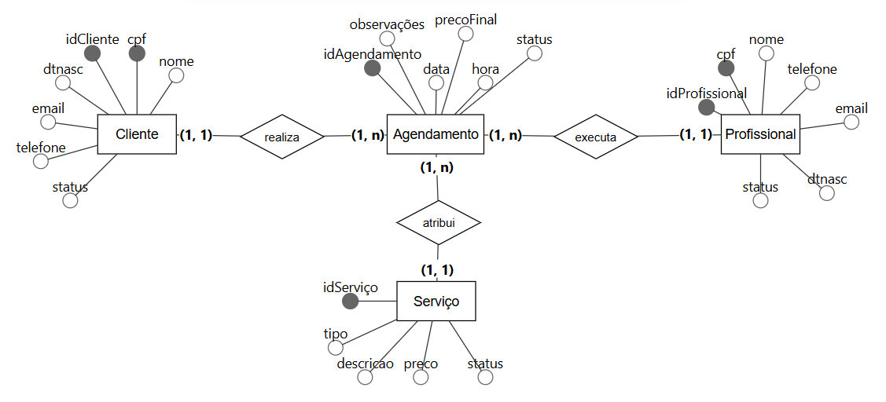
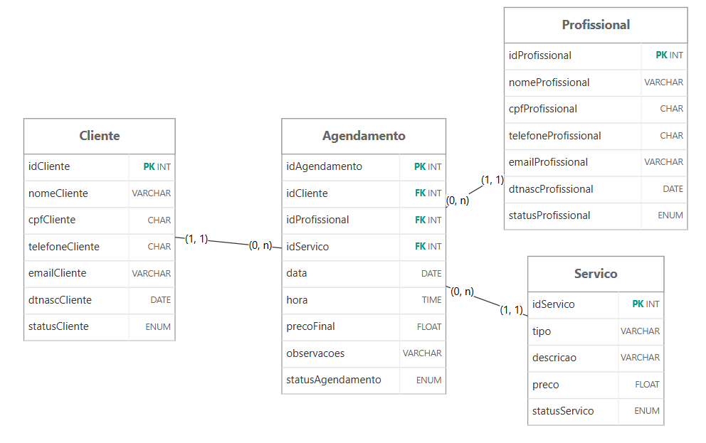

<!doctype html>
<meta charset="utf-8">
<meta name="viewport" content="width=device-width, initial-scale=1, viewport-fit=cover">
<title>Oficina SQL</title>
<meta name="claude:viewport-fit-sides" content="cover">
<meta name="description" content="Trilha de estudos de SQL para MySQL 8.0 ou superior: DDL, DML, DQL, DCL, TCL, comandos de apoio e recursos avançados, com o projeto Sistema Barbearia.">
<link rel="preconnect" href="https://fonts.googleapis.com">
<link rel="preconnect" href="https://fonts.gstatic.com" crossorigin>
<link rel="stylesheet" href="https://fonts.googleapis.com/css2?family=Archivo:wdth,wght@62..125,500..800&family=IBM+Plex+Sans:ital,wght@0,400;0,500;0,600;1,400&family=JetBrains+Mono:wght@400;600&display=swap">
<style>
/* Layout: índice fixo à esquerda (vira faixa rolável no celular) + coluna de leitura de ~70ch.
   Cada família de comandos tem uma cor própria, usada em etiquetas, numeração e bordas de código. */
:root {
  --paper: #f3f5f4;
  --surface: #ffffff;
  --ink: #17242b;
  --muted: #56666d;
  --line: #d6dddc;
  --accent: #0d6b74;
  --accent-ink: #ffffff;
  --code-bg: #14212a;
  --code-fg: #dfe8ea;
  --code-line: #24343e;
  --tok-kw: #7cc7ff;
  --tok-fn: #e7c26b;
  --tok-ty: #c9a2f2;
  --tok-str: #9fdc8f;
  --tok-num: #f2a06b;
  --tok-com: #7d919a;
  --f-apoio: #5d6b72;
  --f-ddl: #2357b5;
  --f-dml: #a85a06;
  --f-dql: #12795a;
  --f-dcl: #7d3fa6;
  --f-tcl: #b02a42;
  --f-adv: #0d6b74;
  --f-proj: #8a5a2b;
  --f-game: #a8327f;
  --tok-bad: #ff8a80;
  --ok: #1b7a46;
  --ok-bg: #e5f3ea;
  --warn: #9a5b00;
  --warn-bg: #fbf0dc;
  --bad: #b3261e;
  --bad-bg: #fbe7e5;
  --tint: #e8eeed;
  --figure-bg: #ffffff; /* os diagramas originais têm fundo branco; o painel fica claro nos dois temas */
  --display: "Archivo", "Arial Narrow", "Helvetica Neue", Arial, sans-serif;
  --body: "IBM Plex Sans", "Segoe UI", Roboto, Helvetica, Arial, sans-serif;
  --mono: "JetBrains Mono", Consolas, "SFMono-Regular", Menlo, monospace;
}
@media (prefers-color-scheme: dark) {
  :root:not([data-theme="light"]) {
    --paper: #10181c; --surface: #172227; --ink: #e3ebec; --muted: #9aabb0; --line: #2a3a40;
    --accent: #4fc0c8; --accent-ink: #0b1a1d; --code-bg: #0b1317; --code-fg: #dfe8ea; --code-line: #1f2d34;
    --f-apoio: #a3b1b6; --f-ddl: #7ea6ff; --f-dml: #f0a54a; --f-dql: #5cd0a0; --f-dcl: #c597ee; --f-tcl: #ff8296; --f-adv: #4fc0c8; --f-proj: #e0a66d; --f-game: #f08ccf;
    --ok: #6fd69a; --ok-bg: #173527; --warn: #f1bd5c; --warn-bg: #3a2c12; --bad: #ff8a80; --bad-bg: #3d1c1a; --tint: #1c2a30;
    color-scheme: dark;
  }
}
:root[data-theme="dark"] {
  --paper: #10181c; --surface: #172227; --ink: #e3ebec; --muted: #9aabb0; --line: #2a3a40;
  --accent: #4fc0c8; --accent-ink: #0b1a1d; --code-bg: #0b1317; --code-fg: #dfe8ea; --code-line: #1f2d34;
  --f-apoio: #a3b1b6; --f-ddl: #7ea6ff; --f-dml: #f0a54a; --f-dql: #5cd0a0; --f-dcl: #c597ee; --f-tcl: #ff8296; --f-adv: #4fc0c8; --f-proj: #e0a66d; --f-game: #f08ccf;
  --ok: #6fd69a; --ok-bg: #173527; --warn: #f1bd5c; --warn-bg: #3a2c12; --bad: #ff8a80; --bad-bg: #3d1c1a; --tint: #1c2a30;
  color-scheme: dark;
}

*, *::before, *::after { box-sizing: border-box; }
html, body { height: 100%; }
body { margin: 0; background: var(--paper); color: var(--ink); font: 16px/1.65 var(--body); -webkit-font-smoothing: antialiased; }
table { font-size: inherit; }
a { color: var(--accent); text-underline-offset: 3px; }
:focus-visible { outline: 2px solid var(--accent); outline-offset: 2px; border-radius: 4px; }
code { font-family: var(--mono); font-size: .88em; background: var(--tint); padding: .1em .35em; border-radius: 4px; }
h1, h2, h3 { font-family: var(--display); text-wrap: balance; line-height: 1.15; margin: 0; }
[data-f="apoio"] { --f: var(--f-apoio); } [data-f="ddl"] { --f: var(--f-ddl); } [data-f="dml"] { --f: var(--f-dml); }
[data-f="dql"] { --f: var(--f-dql); } [data-f="dcl"] { --f: var(--f-dcl); } [data-f="tcl"] { --f: var(--f-tcl); }
[data-f="adv"] { --f: var(--f-adv); } [data-f="proj"] { --f: var(--f-proj); } [data-f="lab"] { --f: var(--f-apoio); } [data-f="game"] { --f: var(--f-game); }

.app { display: grid; grid-template-columns: 272px minmax(0, 1fr); min-height: 100%; }
.side { position: sticky; top: 0; height: 100vh; overflow-y: auto; border-right: 1px solid var(--line); background: var(--surface);
  padding: 28px 18px 28px max(18px, env(safe-area-inset-left, 0px)); display: flex; flex-direction: column; gap: 22px; }
.brand { display: flex; flex-direction: column; gap: 2px; text-decoration: none; color: var(--ink); padding-inline: 8px; }
.brand b { font-family: var(--display); font-stretch: 118%; font-weight: 800; font-size: 1.45rem; letter-spacing: -.01em; }
.brand b span { color: var(--accent); }
.brand small { font: 600 .7rem/1 var(--mono); letter-spacing: .08em; color: var(--muted); text-transform: uppercase; }
.nav-group { display: flex; flex-direction: column; gap: 2px; }
.nav-label { font: 600 .68rem/1 var(--mono); letter-spacing: .1em; text-transform: uppercase; color: var(--muted); padding: 0 8px 8px; }
.nav-link { display: grid; grid-template-columns: 44px 1fr auto; align-items: center; gap: 8px; padding: 7px 8px; border-radius: 8px;
  text-decoration: none; color: var(--ink); font-size: .93rem; font-weight: 500; }
.nav-link:hover { background: var(--tint); }
.nav-link[aria-current="page"] { background: var(--tint); box-shadow: inset 3px 0 0 var(--f, var(--accent)); }
.tag { font: 600 .66rem/1 var(--mono); letter-spacing: .04em; color: var(--f); border: 1px solid color-mix(in srgb, var(--f) 45%, transparent);
  border-radius: 5px; padding: 4px 0; text-align: center; background: color-mix(in srgb, var(--f) 9%, transparent); }
.nav-count { font: .72rem/1 var(--mono); color: var(--muted); font-variant-numeric: tabular-nums; }
.side-foot { margin-top: auto; font-size: .8rem; color: var(--muted); padding-inline: 8px; display: flex; flex-direction: column; gap: 10px; }
.meter { height: 6px; border-radius: 3px; background: var(--tint); overflow: hidden; }
.meter i { display: block; height: 100%; background: var(--accent); width: 0; transition: width .4s ease; }
.theme-btn { align-self: flex-start; font: 500 .78rem/1 var(--body); color: var(--muted); background: none; border: 1px solid var(--line); border-radius: 6px; padding: 7px 10px; cursor: pointer; }
.theme-btn:hover { color: var(--ink); }

main { min-width: 0; }
.wrap { max-width: 880px; margin: 0 auto; padding-block: 48px 120px; padding-left: max(28px, env(safe-area-inset-left, 0px)); padding-right: max(28px, env(safe-area-inset-right, 0px)); }
.eyebrow { font: 600 .74rem/1 var(--mono); letter-spacing: .12em; text-transform: uppercase; color: var(--f, var(--accent)); display: flex; gap: 10px; align-items: center; }
.page-head { display: flex; flex-direction: column; gap: 14px; padding-bottom: 28px; border-bottom: 1px solid var(--line); margin-bottom: 36px; }
.page-head h1 { font-size: clamp(2rem, 5vw, 3rem); font-stretch: 112%; font-weight: 800; letter-spacing: -.02em; }
.lede { font-size: 1.1rem; color: var(--muted); max-width: 64ch; margin: 0; }
.prose { max-width: 70ch; }
.prose p, .prose ul, .prose ol { margin: 0 0 14px; }
.prose li + li { margin-top: 4px; }
.prose h3 { font-size: 1.08rem; font-weight: 700; margin: 22px 0 8px; font-stretch: 105%; }

/* Home */
.hero { display: grid; grid-template-columns: minmax(0, 1.3fr) minmax(0, 1fr); gap: 36px; align-items: end; padding-bottom: 36px; border-bottom: 1px solid var(--line); }
.hero h1 { font-size: clamp(2.4rem, 6.4vw, 4.3rem); font-stretch: 122%; font-weight: 800; letter-spacing: -.03em; line-height: .98; }
.hero h1 em { font-style: normal; color: var(--accent); }
.hero p { color: var(--muted); font-size: 1.08rem; margin: 18px 0 0; max-width: 52ch; }
.console { background: var(--code-bg); color: var(--code-fg); border-radius: 12px; font: 13px/1.7 var(--mono); padding: 16px 18px; overflow-x: auto; }
.console .pr { color: var(--tok-com); }
.console .res { color: var(--tok-str); }
.section-title { font-size: 1.35rem; font-weight: 800; font-stretch: 112%; margin: 44px 0 6px; }
.section-sub { color: var(--muted); margin: 0 0 20px; max-width: 64ch; }
.track { list-style: none; margin: 0; padding: 0; border-top: 1px solid var(--line); }
.track li { border-bottom: 1px solid var(--line); }
.track a { display: grid; grid-template-columns: 30px 54px minmax(0, 1fr) auto; gap: 14px; align-items: center; padding: 16px 4px; text-decoration: none; color: var(--ink); }
.track a:hover { background: color-mix(in srgb, var(--f) 6%, transparent); }
.track .num { font: 600 .8rem/1 var(--mono); color: var(--muted); font-variant-numeric: tabular-nums; }
.track strong { display: block; font-family: var(--display); font-stretch: 108%; font-size: 1.08rem; }
.track span.d { display: block; color: var(--muted); font-size: .9rem; }
.track .prog { font: .78rem/1 var(--mono); color: var(--muted); white-space: nowrap; font-variant-numeric: tabular-nums; }
.steps { display: grid; grid-template-columns: repeat(3, minmax(0, 1fr)); gap: 16px; }
.step { background: var(--surface); border: 1px solid var(--line); border-radius: 12px; padding: 18px; display: flex; flex-direction: column; gap: 6px; }
.step b { font-family: var(--display); font-stretch: 108%; }
.step span { color: var(--muted); font-size: .92rem; }
.step .n { font: 600 .74rem/1 var(--mono); color: var(--accent); }

/* Lessons */
.lesson { padding: 34px 0; border-top: 1px solid var(--line); scroll-margin-top: 20px; }
.lesson:first-of-type { border-top: 0; padding-top: 0; }
.lesson-head { display: flex; justify-content: space-between; align-items: flex-start; gap: 16px; margin-bottom: 10px; }
.lesson-head h2 { font-size: 1.55rem; font-weight: 750; font-stretch: 110%; letter-spacing: -.01em; }
.lesson-num { font: 600 .74rem/1 var(--mono); color: var(--f); letter-spacing: .06em; display: block; margin-bottom: 8px; }
.goal { color: var(--muted); margin: 0 0 18px; font-style: italic; }
.done-toggle { flex: none; display: inline-flex; gap: 8px; align-items: center; font-size: .82rem; color: var(--muted); border: 1px solid var(--line); border-radius: 999px; padding: 6px 12px; cursor: pointer; background: var(--surface); user-select: none; }
.done-toggle input { accent-color: var(--ok); margin: 0; }
.done-toggle:has(input:checked) { color: var(--ok); border-color: color-mix(in srgb, var(--ok) 50%, transparent); background: var(--ok-bg); }

.code { position: relative; margin: 16px 0; border-radius: 10px; background: var(--code-bg); border-left: 3px solid var(--f, var(--accent)); }
.code pre { margin: 0; padding: 16px 18px; overflow-x: auto; font: 13.5px/1.65 var(--mono); color: var(--code-fg); tab-size: 2; }
.code pre code { background: none; padding: 0; font-size: inherit; border-radius: 0; }
.code .cap { display: flex; justify-content: space-between; align-items: center; padding: 8px 10px 0 18px; font: 600 .68rem/1 var(--mono); letter-spacing: .08em; text-transform: uppercase; color: var(--tok-com); }
.copy { font: 600 .7rem/1 var(--mono); letter-spacing: .04em; color: var(--code-fg); background: var(--code-line); border: 0; border-radius: 6px; padding: 7px 10px; cursor: pointer; }
.copy:hover { background: var(--tok-kw); color: var(--code-bg); }
.k { color: var(--tok-kw); font-weight: 600; } .fn { color: var(--tok-fn); } .ty { color: var(--tok-ty); } .s { color: var(--tok-str); } .nu { color: var(--tok-num); } .c { color: var(--tok-com); font-style: italic; }

.note { border: 1px solid var(--line); background: var(--surface); border-radius: 10px; padding: 14px 16px; margin: 16px 0; font-size: .95rem; display: grid; grid-template-columns: auto minmax(0, 1fr); gap: 8px 12px; }
.note > * { grid-column: 2; min-width: 0; }
.note::before { content: "MySQL 8"; font: 700 .64rem/1 var(--mono); letter-spacing: .06em; color: var(--accent-ink); background: var(--accent); border-radius: 4px; padding: 5px 6px; height: fit-content; grid-column: 1; grid-row: 1 / span 6; }
.note.warn::before { content: "ATENÇÃO"; background: var(--warn); color: var(--surface); }
.note p { margin: 0; }

.tbl { overflow-x: auto; margin: 16px 0; border: 1px solid var(--line); border-radius: 10px; background: var(--surface); }
.tbl table { border-collapse: collapse; width: 100%; font-size: .9rem; }
.tbl th, .tbl td { text-align: left; padding: 9px 12px; border-bottom: 1px solid var(--line); vertical-align: top; }
.tbl th { font: 600 .72rem/1.3 var(--mono); letter-spacing: .05em; text-transform: uppercase; color: var(--muted); background: var(--tint); }
.tbl tr:last-child td { border-bottom: 0; }
.tbl td.m { font-family: var(--mono); font-size: .84rem; white-space: nowrap; font-variant-numeric: tabular-nums; }
.tbl caption { caption-side: top; text-align: left; padding: 12px 12px 8px; font-family: var(--display); font-weight: 700; font-stretch: 108%; }

.result-label { font: 600 .7rem/1 var(--mono); letter-spacing: .08em; text-transform: uppercase; color: var(--muted); margin: 14px 0 -8px; }

.exercise { margin-top: 18px; border: 1px dashed color-mix(in srgb, var(--f) 55%, var(--line)); border-radius: 10px; padding: 16px 18px; background: color-mix(in srgb, var(--f) 4%, var(--surface)); }
.exercise .q { display: grid; grid-template-columns: auto minmax(0, 1fr); gap: 12px; }
.exercise .q b { font: 700 .66rem/1 var(--mono); letter-spacing: .08em; color: var(--f); padding-top: 5px; }
.exercise .q p { margin: 0; }
.exercise details { margin-top: 12px; }
.exercise summary { cursor: pointer; font-weight: 600; color: var(--f); font-size: .9rem; width: fit-content; }
.exercise details .code { margin-bottom: 0; }
.exercise details > p { margin: 10px 0 0; }

.chips { display: flex; flex-wrap: wrap; gap: 8px; }
.chip { font: 600 .74rem/1 var(--mono); padding: 7px 10px; border-radius: 6px; border: 1px solid var(--line); background: var(--surface); color: var(--ink); text-decoration: none; }
.chip:hover { border-color: var(--f, var(--accent)); }

.pager { display: flex; justify-content: space-between; gap: 16px; margin-top: 48px; padding-top: 24px; border-top: 1px solid var(--line); flex-wrap: wrap; }
.pager a { text-decoration: none; display: flex; flex-direction: column; gap: 2px; color: var(--ink); }
.pager a small { color: var(--muted); font-size: .78rem; }
.pager a b { font-family: var(--display); font-stretch: 108%; }
.pager a.next { text-align: right; margin-left: auto; }

/* Projeto */
.figure { background: var(--figure-bg); border: 1px solid var(--line); border-radius: 12px; padding: 14px; margin: 16px 0; overflow-x: auto; }
.figure img { display: block; max-width: 100%; height: auto; margin: 0 auto; }
.figcap { font-size: .85rem; color: var(--muted); margin: -6px 0 18px; }
.task-list { list-style: none; padding: 0; margin: 12px 0; counter-reset: t; display: flex; flex-direction: column; gap: 10px; }
.task-list li { display: grid; grid-template-columns: 46px minmax(0, 1fr); gap: 10px; }
.task-list li > span { font: 600 .78rem/1.9 var(--mono); color: var(--f); font-variant-numeric: tabular-nums; }
.task-list li .check { display: block; color: var(--muted); font-size: .88rem; margin-top: 2px; }
.part { padding: 30px 0; border-top: 1px solid var(--line); }
.part-head { display: flex; justify-content: space-between; align-items: baseline; gap: 12px; flex-wrap: wrap; }
.part-head h3 { font-size: 1.3rem; font-weight: 750; font-stretch: 110%; }
.pts { font: 600 .78rem/1 var(--mono); color: var(--f); border: 1px solid color-mix(in srgb, var(--f) 45%, transparent); border-radius: 999px; padding: 6px 10px; white-space: nowrap; }

.checker { display: grid; grid-template-columns: minmax(0, 1fr) minmax(0, 1fr); gap: 18px; margin-top: 16px; }
.checker textarea { white-space: pre; overflow-x: auto; width: 100%; min-height: 460px; resize: vertical; font: 12.5px/1.55 var(--mono); background: var(--code-bg); color: var(--code-fg); border: 1px solid var(--line); border-radius: 10px; padding: 14px; }
.checker-actions { display: flex; gap: 8px; flex-wrap: wrap; margin-top: 10px; }
.btn { font: 600 .85rem/1 var(--body); border-radius: 8px; padding: 10px 14px; cursor: pointer; border: 1px solid var(--line); background: var(--surface); color: var(--ink); }
.btn.primary { background: var(--accent); color: var(--accent-ink); border-color: var(--accent); }
.btn:hover { filter: brightness(1.05); }
.score { display: flex; align-items: baseline; gap: 10px; margin-bottom: 10px; }
.score b { font: 800 2rem/1 var(--display); font-stretch: 115%; font-variant-numeric: tabular-nums; }
.score span { color: var(--muted); font-size: .9rem; }
.results { display: flex; flex-direction: column; gap: 14px; max-height: 620px; overflow-y: auto; padding-right: 4px; }
.results h4 { margin: 0 0 6px; font: 600 .72rem/1 var(--mono); letter-spacing: .08em; text-transform: uppercase; color: var(--muted); }
.results ul { list-style: none; margin: 0; padding: 0; display: flex; flex-direction: column; gap: 6px; }
.res-item { display: grid; grid-template-columns: 62px minmax(0, 1fr); gap: 10px; font-size: .88rem; align-items: start; }
.pill { font: 700 .62rem/1 var(--mono); letter-spacing: .06em; text-align: center; padding: 5px 0; border-radius: 4px; text-transform: uppercase; }
.pill.ok { color: var(--ok); background: var(--ok-bg); } .pill.bad { color: var(--bad); background: var(--bad-bg); }
.pill.warn { color: var(--warn); background: var(--warn-bg); } .pill.idle { color: var(--muted); background: var(--tint); }
.res-item small { display: block; color: var(--muted); font-size: .8rem; margin-top: 2px; }

/* Jogos */
.xp { display: grid; grid-template-columns: auto minmax(0, 1fr); gap: 6px 14px; align-items: baseline; max-width: 560px; }
.xp b { font: 800 1.7rem/1 var(--display); font-stretch: 115%; color: var(--f); font-variant-numeric: tabular-nums; }
.xp span { color: var(--muted); font-size: .9rem; }
.xp .meter { grid-column: 1 / -1; }
.xp .meter i { background: var(--f); }
.game { padding: 34px 0; border-top: 1px solid var(--line); scroll-margin-top: 20px; }
.game-head { display: flex; justify-content: space-between; align-items: flex-start; gap: 12px; flex-wrap: wrap; margin-bottom: 6px; }
.game-head h2 { font-size: 1.55rem; font-weight: 750; font-stretch: 110%; }
.round-top { display: flex; gap: 10px; align-items: center; flex-wrap: wrap; margin-bottom: 4px; }
.round-top b { font-family: var(--display); font-stretch: 106%; font-size: 1.05rem; }
.round-count { margin-left: auto; font: .76rem/1 var(--mono); color: var(--muted); font-variant-numeric: tabular-nums; }
.feedback { min-height: 1.6em; margin: 12px 0 0; font-weight: 600; }
.feedback.ok { color: var(--ok); } .feedback.bad { color: var(--bad); }

input.gap { font: inherit; color: var(--code-fg); background: color-mix(in srgb, var(--tok-kw) 12%, transparent); border: 0; border-bottom: 2px solid var(--tok-kw); border-radius: 3px 3px 0 0; padding: 0 3px; margin: 1px 0; text-transform: uppercase; }
input.gap:focus { outline: none; }
input.gap.current { background: color-mix(in srgb, var(--tok-fn) 26%, transparent); border-bottom-color: var(--tok-fn); }
input.gap.ok { border-bottom-color: var(--tok-str); color: var(--tok-str); background: color-mix(in srgb, var(--tok-str) 14%, transparent); }
input.gap.bad { border-bottom-color: var(--tok-bad); color: var(--tok-bad); background: color-mix(in srgb, var(--tok-bad) 14%, transparent); }
.bank { display: flex; flex-wrap: wrap; gap: 8px; margin: 14px 0 0; }
.word { font: 600 .8rem/1 var(--mono); padding: 9px 11px; border: 1px solid var(--line); background: var(--surface); color: var(--ink); border-radius: 6px; cursor: pointer; }
.word:hover { border-color: var(--f); color: var(--f); }

.mem-stats { display: flex; gap: 18px; flex-wrap: wrap; font: .82rem/1 var(--mono); color: var(--muted); margin: 6px 0 14px; font-variant-numeric: tabular-nums; }
.mem-stats b { color: var(--ink); }
.mem-grid { display: grid; grid-template-columns: repeat(4, minmax(0, 1fr)); gap: 10px; }
.mem-card { position: relative; min-height: 118px; border: 0; padding: 0; background: none; cursor: pointer; perspective: 900px; color: inherit; font: inherit; }
.mem-card .face { position: absolute; inset: 0; display: flex; align-items: center; justify-content: center; text-align: center; padding: 10px; border-radius: 10px; backface-visibility: hidden; transition: transform .45s ease; }
.mem-card .back { background: var(--code-bg); color: var(--tok-kw); font: 800 1.1rem/1 var(--mono); letter-spacing: .08em; border: 1px solid var(--code-line);
  background-image: repeating-linear-gradient(45deg, transparent 0 10px, color-mix(in srgb, var(--tok-kw) 7%, transparent) 10px 11px); }
.mem-card .front { background: var(--surface); border: 1px solid var(--line); transform: rotateY(180deg); font-size: .84rem; line-height: 1.35; }
.mem-card .front.cmd { font: 700 .92rem/1.3 var(--mono); color: var(--f); }
.mem-card.up .back { transform: rotateY(-180deg); }
.mem-card.up .front { transform: rotateY(0deg); }
.mem-card.matched .front { border-color: color-mix(in srgb, var(--ok) 60%, transparent); background: var(--ok-bg); }
.mem-card.matched { cursor: default; }

.link-board { position: relative; display: grid; grid-template-columns: minmax(0, 1fr) minmax(0, 1fr); column-gap: clamp(40px, 9vw, 110px); margin-top: 10px; }
.link-lines { position: absolute; inset: 0; pointer-events: none; overflow: visible; z-index: 0; }
.link-lines path { fill: none; stroke: var(--f); stroke-width: 2.5; stroke-linecap: round; }
.link-lines path.ok { stroke: var(--ok); }
.link-lines path.bad { stroke: var(--bad); stroke-dasharray: 6 5; }
.link-col { display: flex; flex-direction: column; gap: 10px; position: relative; z-index: 1; min-width: 0; }
.link-item { position: relative; text-align: left; font: .9rem/1.35 var(--body); padding: 10px 12px; min-height: 48px; border: 1px solid var(--line); background: var(--surface); color: var(--ink); border-radius: 8px; cursor: pointer; }
.link-item.left { font: 600 .85rem/1.35 var(--mono); }
.link-item::after { content: ""; position: absolute; top: 50%; width: 11px; height: 11px; border-radius: 50%; background: var(--surface); border: 2px solid var(--line); transform: translateY(-50%); }
.link-item.left::after { right: -7px; }
.link-item.right::after { left: -7px; }
.link-item:hover { border-color: var(--f); }
.link-item.selected { border-color: var(--f); box-shadow: 0 0 0 3px color-mix(in srgb, var(--f) 25%, transparent); }
.link-item.linked::after { background: var(--f); border-color: var(--f); }
.link-item.ok { border-color: var(--ok); background: var(--ok-bg); }
.link-item.ok::after { background: var(--ok); border-color: var(--ok); }
.link-item.bad { border-color: var(--bad); background: var(--bad-bg); }
.link-item.bad::after { background: var(--bad); border-color: var(--bad); }

@media (max-width: 900px) {
  .app { grid-template-columns: minmax(0, 1fr); }
  .side { position: static; height: auto; border-right: 0; border-bottom: 1px solid var(--line); padding: 16px max(16px, env(safe-area-inset-right, 0px)) 12px max(16px, env(safe-area-inset-left, 0px)); gap: 12px; }
  .side .nav-wrap { display: flex; gap: 6px; overflow-x: auto; padding-bottom: 6px; }
  .nav-group { flex-direction: row; gap: 6px; }
  .nav-label, .side-foot p, .nav-count { display: none; }
  .nav-link { grid-template-columns: auto auto; white-space: nowrap; border: 1px solid var(--line); padding: 6px 10px 6px 6px; }
  .nav-link .tag { padding: 4px 6px; }
  .side-foot { flex-direction: row; align-items: center; margin-top: 0; }
  .side-foot .meter { flex: 1; }
  .hero { grid-template-columns: minmax(0, 1fr); }
  .steps { grid-template-columns: minmax(0, 1fr); }
  .checker { grid-template-columns: minmax(0, 1fr); }
  .checker textarea { min-height: 300px; }
}
@media (max-width: 600px) {
  .wrap { padding-block: 32px 80px; padding-left: max(16px, env(safe-area-inset-left, 0px)); padding-right: max(16px, env(safe-area-inset-right, 0px)); }
  .lesson-head { flex-direction: column; }
  .track a { grid-template-columns: 50px minmax(0, 1fr); }
  .track .num, .track .prog { display: none; }
  .code pre { font-size: 12.5px; padding: 14px; }
}
@media (max-width: 640px) {
  .mem-grid { grid-template-columns: repeat(2, minmax(0, 1fr)); gap: 8px; }
  .mem-card { min-height: 92px; }
  .mem-card .front { font-size: .8rem; }
  .link-item { font-size: .82rem; padding: 9px 10px; }
  .link-item.left { font-size: .78rem; }
}
@media (prefers-reduced-motion: reduce) { * { transition: none !important; scroll-behavior: auto !important; } }
</style>

<div class="app">
  <aside class="side" aria-label="Navegação">
    <a class="brand" href="#inicio"><b>oficina<span>.</span>sql</b><small>MySQL 8.0 ou superior</small></a>
    <div class="nav-wrap" id="nav"></div>
    <div class="side-foot">
      <p id="prog-text">0 de 0 lições estudadas</p>
      <div class="meter" aria-hidden="true"><i id="prog-bar"></i></div>
      <button class="theme-btn" id="theme-btn" type="button">Tema: sistema</button>
    </div>
  </aside>
  <main id="main" tabindex="-1"><div class="wrap" id="view"></div></main>
</div>

<script>
/* =========================================================================
   CONTEÚDO
   Banco de prática das lições: "biblioteca" (Autor, Livro, Leitor, Emprestimo).
   O projeto final usa outro domínio (sistema_barbearia) para que o aluno
   transfira o raciocínio em vez de copiar comandos.
   ========================================================================= */

const LAB_SQL = `-- =========================================================
-- Banco de prática: biblioteca (MySQL 8.0 ou superior)
-- Execute tudo de uma vez. O script recria o banco do zero.
-- =========================================================
DROP DATABASE IF EXISTS biblioteca;
CREATE DATABASE biblioteca
  CHARACTER SET utf8mb4
  COLLATE utf8mb4_0900_ai_ci;
USE biblioteca;

CREATE TABLE Autor (
  idAutor        INT          PRIMARY KEY AUTO_INCREMENT,
  nomeAutor      VARCHAR(60)  NOT NULL,
  nacionalidade  VARCHAR(30)  NOT NULL
);

CREATE TABLE Livro (
  idLivro        INT           PRIMARY KEY AUTO_INCREMENT,
  titulo         VARCHAR(100)  NOT NULL,
  isbn           CHAR(13)      NOT NULL,
  anoPublicacao  SMALLINT      NOT NULL,
  preco          DECIMAL(8,2)  NOT NULL,
  idAutor        INT           NOT NULL,
  statusLivro    ENUM('Disponivel','Emprestado','Inativo') NOT NULL DEFAULT 'Disponivel',
  UNIQUE (isbn),
  CONSTRAINT fk_livro_autor FOREIGN KEY (idAutor) REFERENCES Autor (idAutor)
);

CREATE TABLE Leitor (
  idLeitor       INT          PRIMARY KEY AUTO_INCREMENT,
  nomeLeitor     VARCHAR(50)  NOT NULL,
  cpfLeitor      CHAR(11)     NOT NULL,
  emailLeitor    VARCHAR(60)  NOT NULL,
  dtnascLeitor   DATE         NOT NULL,
  statusLeitor   ENUM('Ativo','Inativo') NOT NULL DEFAULT 'Ativo',
  UNIQUE (cpfLeitor)
);

CREATE TABLE Emprestimo (
  idEmprestimo     INT           PRIMARY KEY AUTO_INCREMENT,
  idLeitor         INT           NOT NULL,
  idLivro          INT           NOT NULL,
  dataEmprestimo   DATE          NOT NULL,
  dataPrevista     DATE          NOT NULL,
  dataDevolucao    DATE          NULL,
  multa            DECIMAL(6,2)  NOT NULL DEFAULT 0.00,
  statusEmprestimo ENUM('Aberto','Devolvido','Atrasado') NOT NULL DEFAULT 'Aberto',
  CONSTRAINT fk_emp_leitor FOREIGN KEY (idLeitor) REFERENCES Leitor (idLeitor),
  CONSTRAINT fk_emp_livro  FOREIGN KEY (idLivro)  REFERENCES Livro (idLivro),
  CONSTRAINT ck_emp_datas  CHECK (dataPrevista >= dataEmprestimo)
);

INSERT INTO Autor (nomeAutor, nacionalidade) VALUES
  ('Machado de Assis',   'Brasileira'),
  ('Clarice Lispector',  'Brasileira'),
  ('George Orwell',      'Britânica'),
  ('Conceição Evaristo', 'Brasileira');

-- ISBNs fictícios, apenas para estudo
INSERT INTO Livro (titulo, isbn, anoPublicacao, preco, idAutor, statusLivro) VALUES
  ('Dom Casmurro',                    '9788500000011', 1899, 39.90, 1, 'Disponivel'),
  ('Memórias Póstumas de Brás Cubas', '9788500000028', 1881, 42.50, 1, 'Emprestado'),
  ('A Hora da Estrela',               '9788500000035', 1977, 34.90, 2, 'Disponivel'),
  ('Laços de Família',                '9788500000042', 1960, 49.00, 2, 'Emprestado'),
  ('1984',                            '9788500000059', 1949, 59.90, 3, 'Emprestado'),
  ('A Revolução dos Bichos',          '9788500000066', 1945, 29.90, 3, 'Disponivel'),
  ('Olhos d''Água',                   '9788500000073', 2014, 44.00, 4, 'Disponivel'),
  ('Ponciá Vicêncio',                 '9788500000080', 2003, 38.00, 4, 'Inativo');

INSERT INTO Leitor (nomeLeitor, cpfLeitor, emailLeitor, dtnascLeitor, statusLeitor) VALUES
  ('Ana Souza',    '11122233344', 'ana.souza@email.com',   '2004-03-15', 'Ativo'),
  ('Bruno Lima',   '22233344455', 'bruno.lima@gmail.com',  '1999-11-02', 'Ativo'),
  ('Carla Mendes', '33344455566', 'carla@gmail.com',       '2007-07-21', 'Ativo'),
  ('Diego Rocha',  '44455566677', 'diego.rocha@email.com', '1988-01-30', 'Inativo'),
  ('Elisa Prado',  '55566677788', 'elisa.prado@gmail.com', '2002-09-09', 'Ativo');

INSERT INTO Emprestimo (idLeitor, idLivro, dataEmprestimo, dataPrevista, dataDevolucao, multa, statusEmprestimo) VALUES
  (1, 1, '2026-09-01', '2026-09-15', '2026-09-14', 0.00, 'Devolvido'),
  (2, 5, '2026-09-20', '2026-10-04', NULL,         0.00, 'Atrasado'),
  (1, 2, '2026-10-05', '2026-10-19', NULL,         0.00, 'Aberto'),
  (3, 3, '2026-08-10', '2026-08-24', '2026-08-30', 6.00, 'Devolvido'),
  (5, 6, '2026-09-12', '2026-09-26', '2026-09-25', 0.00, 'Devolvido'),
  (2, 1, '2026-10-01', '2026-10-15', '2026-10-10', 0.00, 'Devolvido'),
  (5, 4, '2026-10-08', '2026-10-22', NULL,         0.00, 'Aberto');

SHOW TABLES;`;

const L = (title, goal, body, ex) => ({ title, goal, body, ex });
const sql = (code, cap) => ({ code: code.trim(), cap });

const MODULES = [
{
  id: 'apoio', tag: 'APOIO', title: 'Comandos de apoio', short: 'Apoio',
  desc: 'SHOW, DESC, USE e SELECT de diagnóstico. Os comandos que você usa o tempo todo para saber onde está e o que existe.',
  lessons: [
    L('Conectar e se localizar', 'Descobrir a versão do servidor, listar bancos e escolher em qual trabalhar.', [
      `<p>Antes de criar ou consultar qualquer coisa, confirme três fatos: qual servidor está respondendo, quais bancos existem e qual banco está em uso. Muitos erros de iniciante, como <code>Error 1046: No database selected</code>, vêm de pular essa checagem.</p>`,
      sql(`SELECT VERSION();          -- versão do servidor (precisa ser 8.0 ou superior)
SHOW DATABASES;            -- lista os bancos visíveis para o seu usuário
USE biblioteca;            -- define o banco padrão da sessão
SELECT DATABASE();         -- confirma qual banco está em uso
SELECT CURRENT_USER();     -- mostra com qual usuário você está conectado`),
      `<h3>Comentários e fim de comando</h3><p>Todo comando termina com <code>;</code>. Comentários de uma linha começam com <code>-- </code> (dois hífens e um espaço) ou <code>#</code>. Blocos usam <code>/* ... */</code>. Comente seus scripts: eles também são documentação do projeto.</p>`,
      { note: `<p>No MySQL Workbench, <kbd>Ctrl</kbd>+<kbd>Enter</kbd> executa só o comando onde está o cursor e <kbd>Ctrl</kbd>+<kbd>Shift</kbd>+<kbd>Enter</kbd> executa o script inteiro (ou o trecho selecionado).</p>` }
    ], { q: 'Escreva os comandos para entrar no banco biblioteca e provar que ele é o banco em uso.', a: sql(`USE biblioteca;
SELECT DATABASE();   -- deve retornar: biblioteca`) }),

    L('Inspecionar a estrutura', 'Ler a estrutura de tabelas existentes sem abrir o script que as criou.', [
      `<p>Você vai usar estes comandos para conferir cada <code>CREATE</code> e <code>ALTER</code> que fizer. Eles mostram colunas, tipos, chaves, valores padrão e índices.</p>`,
      sql(`SHOW TABLES;                 -- tabelas do banco em uso
SHOW FULL TABLES;            -- mesma lista, indicando o que é BASE TABLE e o que é VIEW
DESC Livro;                  -- atalho de DESCRIBE: colunas, tipo, nulo, chave, padrão
SHOW COLUMNS FROM Livro;     -- equivalente ao DESC
SHOW CREATE TABLE Livro;     -- o CREATE TABLE completo, com FKs e CHECKs
SHOW INDEX FROM Emprestimo;  -- índices da tabela (PK, UNIQUE, FKs, índices criados)`),
      `<p>Na coluna <b>Key</b> do <code>DESC</code>, <code>PRI</code> indica chave primária, <code>UNI</code> indica valor único e <code>MUL</code> indica uma coluna indexada que aceita repetição, o que é o caso típico de uma chave estrangeira.</p>`,
      { note: `<p>O <code>DESC</code> não mostra as chaves estrangeiras nem as restrições <code>CHECK</code>. Para conferir uma FK, use <code>SHOW CREATE TABLE</code>.</p>` }
    ], { q: 'Como você confere se a tabela Emprestimo realmente tem as duas chaves estrangeiras e o CHECK de datas?', a: sql(`SHOW CREATE TABLE Emprestimo;
-- procure por: CONSTRAINT fk_emp_leitor FOREIGN KEY ...
--              CONSTRAINT fk_emp_livro  FOREIGN KEY ...
--              CONSTRAINT ck_emp_datas  CHECK (...)`) }),

    L('Avisos, erros e configurações', 'Investigar o que o servidor respondeu e como a sessão está configurada.', [
      `<p>Quando um comando termina com <i>warning</i>, o Workbench só mostra a contagem. Os detalhes ficam disponíveis logo em seguida, na mesma sessão.</p>`,
      sql(`SHOW WARNINGS;                         -- avisos do último comando
SHOW ERRORS;                           -- erros do último comando
SHOW VARIABLES LIKE 'autocommit';      -- 1 = cada comando é confirmado sozinho
SHOW VARIABLES LIKE 'sql_mode';        -- modo estrito, ONLY_FULL_GROUP_BY etc.
SELECT @@version, @@character_set_database;

-- Objetos programáveis (módulo Avançados)
SHOW TRIGGERS;
SHOW PROCEDURE STATUS WHERE Db = 'biblioteca';
SHOW FUNCTION STATUS  WHERE Db = 'biblioteca';
SHOW GRANTS;                           -- privilégios do seu usuário`),
    ], { q: 'Você executou um INSERT e o Workbench mostrou "1 row(s) affected, 1 warning(s)". Qual comando revela o aviso?', a: sql(`SHOW WARNINGS;`) }),

    L('As cinco famílias de comandos', 'Classificar qualquer comando SQL pela sua finalidade.', [
      `<p>A classificação ajuda a prever o efeito de um comando: se ele muda a estrutura, os dados, as permissões ou o controle de uma transação.</p>
      <div class="tbl"><table><thead><tr><th>Família</th><th>Significado</th><th>Comandos</th><th>Age sobre</th></tr></thead><tbody>
      <tr><td data-f="ddl"><span class="tag" style="padding:4px 6px">DDL</span></td><td>Data Definition Language</td><td class="m">CREATE, ALTER, DROP, TRUNCATE, RENAME</td><td>Estrutura: bancos, tabelas, colunas, índices</td></tr>
      <tr><td data-f="dml"><span class="tag" style="padding:4px 6px">DML</span></td><td>Data Manipulation Language</td><td class="m">INSERT, UPDATE, DELETE</td><td>Linhas de dados</td></tr>
      <tr><td data-f="dql"><span class="tag" style="padding:4px 6px">DQL</span></td><td>Data Query Language</td><td class="m">SELECT</td><td>Leitura e consulta</td></tr>
      <tr><td data-f="dcl"><span class="tag" style="padding:4px 6px">DCL</span></td><td>Data Control Language</td><td class="m">GRANT, REVOKE</td><td>Usuários e permissões</td></tr>
      <tr><td data-f="tcl"><span class="tag" style="padding:4px 6px">TCL</span></td><td>Transaction Control Language</td><td class="m">START TRANSACTION, COMMIT, ROLLBACK, SAVEPOINT</td><td>Confirmação ou desfazimento</td></tr>
      </tbody></table></div>
      <p>Alguns livros colocam o <code>SELECT</code> dentro da DML. Aqui ele fica em uma família própria, a DQL, porque só lê dados.</p>`
    ], { q: 'Classifique: TRUNCATE TABLE Emprestimo; GRANT SELECT ON biblioteca.* TO ...; ROLLBACK; UPDATE Livro SET ...', a: { text: '<b>TRUNCATE</b> é DDL (recria a tabela vazia e não pode ser desfeito com ROLLBACK). <b>GRANT</b> é DCL. <b>ROLLBACK</b> é TCL. <b>UPDATE</b> é DML.' } })
  ]
},
{
  id: 'ddl', tag: 'DDL', title: 'DDL: definir a estrutura', short: 'DDL',
  desc: 'CREATE, ALTER e DROP. Tipos de dados, chaves primárias e estrangeiras e restrições de integridade.',
  lessons: [
    L('CREATE DATABASE', 'Criar um banco com o conjunto de caracteres correto e selecioná-lo.', [
      sql(`CREATE DATABASE IF NOT EXISTS biblioteca
  CHARACTER SET utf8mb4
  COLLATE utf8mb4_0900_ai_ci;

USE biblioteca;`),
      `<p><code>IF NOT EXISTS</code> evita erro se o banco já existir. <code>utf8mb4</code> armazena qualquer caractere Unicode, incluindo acentos e emojis. O sufixo <code>_ai_ci</code> da collation significa <i>accent insensitive</i> e <i>case insensitive</i>: em comparações, <code>'jose'</code> é igual a <code>'José'</code>.</p>
      <h3>Convenções usadas nesta trilha</h3><ul><li>Nome do banco em minúsculas, com <code>_</code>: <code>sistema_barbearia</code>.</li><li>Tabela no singular, com inicial maiúscula: <code>Cliente</code>, <code>Agendamento</code>.</li><li>Colunas em camelCase com o nome da tabela: <code>idCliente</code>, <code>nomeCliente</code>.</li></ul>`,
      { note: `<p>No MySQL 8, <code>utf8mb4</code> com <code>utf8mb4_0900_ai_ci</code> já é o padrão. Escrever explicitamente deixa o script independente da configuração do servidor.</p><p>No Windows, nomes de tabela não diferenciam maiúsculas de minúsculas. No Linux, diferenciam. Escreva sempre do mesmo jeito para o script funcionar nos dois.</p>` }
    ], { q: 'Crie o banco sistema_barbearia com utf8mb4 e selecione-o.', a: sql(`CREATE DATABASE IF NOT EXISTS sistema_barbearia
  CHARACTER SET utf8mb4
  COLLATE utf8mb4_0900_ai_ci;
USE sistema_barbearia;`) }),

    L('Tipos de dados', 'Escolher o tipo pelo significado do dado, e não só pelo formato.', [
      `<div class="tbl"><table><thead><tr><th>Tipo</th><th>Use para</th><th>Exemplo</th></tr></thead><tbody>
      <tr><td class="m">INT</td><td>Identificadores e contagens</td><td class="m">idLivro INT</td></tr>
      <tr><td class="m">SMALLINT</td><td>Inteiros pequenos (até 32.767)</td><td class="m">anoPublicacao SMALLINT</td></tr>
      <tr><td class="m">DECIMAL(p,s)</td><td>Dinheiro e valores exatos. <b>p</b> dígitos no total, <b>s</b> depois da vírgula</td><td class="m">preco DECIMAL(8,2) → até 999999.99</td></tr>
      <tr><td class="m">VARCHAR(n)</td><td>Texto de tamanho variável</td><td class="m">nomeLeitor VARCHAR(50)</td></tr>
      <tr><td class="m">CHAR(n)</td><td>Texto de tamanho fixo</td><td class="m">cpfLeitor CHAR(11)</td></tr>
      <tr><td class="m">TEXT</td><td>Textos longos, sem índice comum</td><td class="m">resenha TEXT</td></tr>
      <tr><td class="m">DATE / TIME</td><td>Data (AAAA-MM-DD) / hora (HH:MM:SS)</td><td class="m">'2026-10-16' / '14:30:00'</td></tr>
      <tr><td class="m">DATETIME</td><td>Data e hora juntas</td><td class="m">'2026-10-16 14:30:00'</td></tr>
      <tr><td class="m">BOOLEAN</td><td>Verdadeiro/falso (é um TINYINT(1))</td><td class="m">ativo BOOLEAN</td></tr>
      <tr><td class="m">ENUM(...)</td><td>Um valor de uma lista fixa</td><td class="m">ENUM('Ativo','Inativo')</td></tr>
      </tbody></table></div>
      <h3>Por que CPF e telefone são CHAR?</h3><p>Porque não fazemos contas com eles. Como número, um CPF que começa com zero perderia o zero à esquerda. Guardar como texto de 11 posições preserva todos os dígitos.</p>
      <h3>Por que dinheiro não é FLOAT?</h3><p><code>FLOAT</code> e <code>DOUBLE</code> são aproximados: <code>0.1 + 0.2</code> não dá exatamente <code>0.3</code>. Em valores monetários, use <code>DECIMAL</code>.</p>`,
      { note: `<p>A largura de exibição em inteiros, como <code>INT(11)</code>, está obsoleta desde o MySQL 8.0.17. Escreva apenas <code>INT</code>.</p>` }
    ], { q: 'Qual o tipo mais adequado para: e-mail, data de nascimento, preço de um serviço e status "Ativo"/"Inativo"?', a: { text: '<code>VARCHAR(60)</code>, <code>DATE</code>, <code>DECIMAL(8,2)</code> e <code>ENUM(\'Ativo\',\'Inativo\')</code>.' } }),

    L('CREATE TABLE e restrições', 'Criar tabelas com chave primária, campos obrigatórios, valores únicos e regras de validação.', [
      sql(`CREATE TABLE Leitor (
  idLeitor      INT          PRIMARY KEY AUTO_INCREMENT,
  nomeLeitor    VARCHAR(50)  NOT NULL,
  cpfLeitor     CHAR(11)     NOT NULL,
  emailLeitor   VARCHAR(60)  NOT NULL,
  dtnascLeitor  DATE         NOT NULL,
  statusLeitor  ENUM('Ativo','Inativo') NOT NULL DEFAULT 'Ativo',
  UNIQUE (cpfLeitor)
);`),
      `<div class="tbl"><table><thead><tr><th>Restrição</th><th>O que garante</th></tr></thead><tbody>
      <tr><td class="m">PRIMARY KEY</td><td>Identifica cada linha. Única e nunca nula. Uma por tabela (pode ter mais de uma coluna).</td></tr>
      <tr><td class="m">AUTO_INCREMENT</td><td>O MySQL gera o próximo número. Só em coluna indexada, normalmente a PK.</td></tr>
      <tr><td class="m">NOT NULL</td><td>Campo obrigatório. A coluna aceita <code>NULL</code> quando você não escreve nada ou escreve <code>NULL</code>.</td></tr>
      <tr><td class="m">UNIQUE</td><td>Não permite valor repetido na coluna (ou na combinação de colunas).</td></tr>
      <tr><td class="m">DEFAULT</td><td>Valor usado quando o <code>INSERT</code> não informa a coluna.</td></tr>
      <tr><td class="m">CHECK (expr)</td><td>Rejeita linhas em que a expressão é falsa.</td></tr>
      </tbody></table></div>
      <p>Nesta trilha, a chave primária fica na própria coluna: <code>idLeitor INT PRIMARY KEY AUTO_INCREMENT</code>. Assim, quem lê a primeira linha já sabe qual é o identificador da tabela. <code>PRIMARY KEY</code> já implica <code>NOT NULL</code>, então não é preciso repetir.</p>
      <p>A forma no fim da tabela continua necessária em dois casos: chave primária com mais de uma coluna, como <code>PRIMARY KEY (idPedido, idProduto)</code>, e restrições que você quer nomear com <code>CONSTRAINT nome</code> para remover depois, como <code>UNIQUE</code>, <code>CHECK</code> e <code>FOREIGN KEY</code>.</p>`,
      sql(`CREATE TABLE Autor (
  idAutor        INT          PRIMARY KEY AUTO_INCREMENT,
  nomeAutor      VARCHAR(60)  NOT NULL,
  nacionalidade  VARCHAR(30)  NOT NULL
);`, 'Tabela sem dependências'),
      { note: `<p><code>CHECK</code> só é realmente aplicado a partir do MySQL 8.0.16. Em versões anteriores ele era aceito na sintaxe e ignorado.</p>` }
    ], { q: 'Escreva a tabela Servico da barbearia: idServico (PK, auto incremento), tipo VARCHAR(50) único, descricao VARCHAR(100), preco DECIMAL(8,2) e statusServico ENUM("Ativo","Inativo"), todos obrigatórios.', a: sql(`CREATE TABLE Servico (
  idServico      INT           PRIMARY KEY AUTO_INCREMENT,
  tipo           VARCHAR(50)   NOT NULL,
  descricao      VARCHAR(100)  NOT NULL,
  preco          DECIMAL(8,2)  NOT NULL,
  statusServico  ENUM('Ativo','Inativo') NOT NULL,
  UNIQUE (tipo)
);`) }),

    L('Chaves estrangeiras', 'Ligar tabelas e deixar o banco garantir que a referência existe.', [
      `<p>A chave estrangeira (FK) é a coluna de uma tabela <b>filha</b> que aponta para a chave primária de uma tabela <b>pai</b>. Com ela, o MySQL recusa um empréstimo de um leitor que não existe.</p>`,
      sql(`CREATE TABLE Emprestimo (
  idEmprestimo     INT           PRIMARY KEY AUTO_INCREMENT,
  idLeitor         INT           NOT NULL,
  idLivro          INT           NOT NULL,
  dataEmprestimo   DATE          NOT NULL,
  dataPrevista     DATE          NOT NULL,
  dataDevolucao    DATE          NULL,          -- pode ficar vazio até a devolução
  multa            DECIMAL(6,2)  NOT NULL DEFAULT 0.00,
  statusEmprestimo ENUM('Aberto','Devolvido','Atrasado') NOT NULL DEFAULT 'Aberto',
  CONSTRAINT fk_emp_leitor FOREIGN KEY (idLeitor) REFERENCES Leitor (idLeitor),
  CONSTRAINT fk_emp_livro  FOREIGN KEY (idLivro)  REFERENCES Livro (idLivro)
    ON UPDATE CASCADE
    ON DELETE RESTRICT,
  CONSTRAINT ck_emp_datas CHECK (dataPrevista >= dataEmprestimo)
);`),
      `<h3>Regras para a FK funcionar</h3><ol><li><b>Ordem de criação:</b> crie primeiro as tabelas pai (Leitor, Livro) e depois a filha (Emprestimo). Para apagar, a ordem é inversa.</li><li><b>Mesmo tipo:</b> a coluna filha precisa ter o mesmo tipo da PK do pai (<code>INT</code> com <code>INT</code>).</li><li><b>Motor InnoDB:</b> é o padrão do MySQL 8 e o único motor comum que aplica FKs.</li></ol>
      <h3>O que acontece quando o pai muda</h3><div class="tbl"><table><thead><tr><th>Opção</th><th>Efeito ao apagar/alterar o pai</th></tr></thead><tbody>
      <tr><td class="m">RESTRICT / NO ACTION</td><td>Bloqueia a operação se houver filhos. É o padrão.</td></tr>
      <tr><td class="m">CASCADE</td><td>Repete a operação nos filhos (apaga ou atualiza junto).</td></tr>
      <tr><td class="m">SET NULL</td><td>Coloca <code>NULL</code> na FK dos filhos (a coluna precisa aceitar nulo).</td></tr></tbody></table></div>`,
      { warn: true, note: `<p>No MySQL 8, escrever <code>idLeitor INT REFERENCES Leitor(idLeitor)</code> na própria coluna <b>não cria</b> a chave estrangeira: o MySQL aceita a sintaxe e a ignora. Use sempre a cláusula <code>FOREIGN KEY (...) REFERENCES ...</code>.</p>` }
    ], { q: 'Na barbearia, em que ordem as quatro tabelas devem ser criadas? E apagadas?', a: { text: 'Criação: <b>Cliente</b>, <b>Profissional</b> e <b>Servico</b> (em qualquer ordem entre si), e por último <b>Agendamento</b>. Para apagar: primeiro <b>Agendamento</b>, depois as outras três.' } }),

    L('ALTER TABLE', 'Mudar uma tabela que já existe sem perder os dados.', [
      sql(`-- Adicionar coluna (AFTER define a posição)
ALTER TABLE Livro ADD COLUMN paginas SMALLINT NULL AFTER anoPublicacao;

-- Mudar tipo ou restrição de uma coluna (reescreva a definição inteira)
ALTER TABLE Livro MODIFY COLUMN paginas SMALLINT NOT NULL DEFAULT 0;

-- Renomear coluna (MySQL 8)
ALTER TABLE Livro RENAME COLUMN paginas TO numPaginas;

-- Renomear e redefinir ao mesmo tempo
ALTER TABLE Livro CHANGE COLUMN numPaginas totalPaginas INT NOT NULL DEFAULT 0;

-- Definir ou remover valor padrão
ALTER TABLE Leitor ALTER COLUMN statusLeitor SET DEFAULT 'Ativo';

-- Restrições
ALTER TABLE Livro ADD CONSTRAINT ck_livro_preco CHECK (preco > 0);
ALTER TABLE Livro DROP CHECK ck_livro_preco;
ALTER TABLE Autor ADD CONSTRAINT uq_autor_nome UNIQUE (nomeAutor);
ALTER TABLE Autor DROP INDEX uq_autor_nome;          -- UNIQUE é removido como índice

-- Chave estrangeira criada depois
ALTER TABLE Emprestimo DROP FOREIGN KEY fk_emp_leitor;
ALTER TABLE Emprestimo ADD CONSTRAINT fk_emp_leitor
  FOREIGN KEY (idLeitor) REFERENCES Leitor (idLeitor);

-- Remover coluna e renomear tabela
ALTER TABLE Livro DROP COLUMN totalPaginas;
RENAME TABLE Autor TO Escritor;
RENAME TABLE Escritor TO Autor;`),
      { note: `<p><code>MODIFY</code> substitui a definição inteira da coluna. Se a coluna era <code>NOT NULL</code> e você escreve <code>MODIFY preco DECIMAL(10,2)</code> sem repetir <code>NOT NULL</code>, ela passa a aceitar nulos.</p>` }
    ], { q: 'Adicione à tabela Servico a coluna duracaoMin (SMALLINT, obrigatória, padrão 30) logo depois de preco.', a: sql(`ALTER TABLE Servico
  ADD COLUMN duracaoMin SMALLINT NOT NULL DEFAULT 30 AFTER preco;`) }),

    L('DROP e TRUNCATE', 'Remover objetos com segurança e entender a diferença entre esvaziar e excluir.', [
      sql(`DROP TABLE IF EXISTS Rascunho;          -- remove a tabela (estrutura + dados)
DROP DATABASE IF EXISTS teste;          -- remove o banco inteiro
TRUNCATE TABLE Emprestimo;              -- esvazia a tabela e reinicia o AUTO_INCREMENT`),
      `<div class="tbl"><table><thead><tr><th></th><th>DELETE FROM t</th><th>TRUNCATE TABLE t</th><th>DROP TABLE t</th></tr></thead><tbody>
      <tr><td>Família</td><td>DML</td><td>DDL</td><td>DDL</td></tr>
      <tr><td>Aceita WHERE</td><td>Sim</td><td>Não</td><td>Não</td></tr>
      <tr><td>Mantém a estrutura</td><td>Sim</td><td>Sim</td><td>Não</td></tr>
      <tr><td>Reinicia AUTO_INCREMENT</td><td>Não</td><td>Sim</td><td>(tabela some)</td></tr>
      <tr><td>Pode ser desfeito com ROLLBACK</td><td>Sim, dentro de transação</td><td>Não</td><td>Não</td></tr>
      <tr><td>Dispara triggers de DELETE</td><td>Sim</td><td>Não</td><td>Não</td></tr></tbody></table></div>`,
      { warn: true, note: `<p>Não é possível dar <code>TRUNCATE</code> nem <code>DROP</code> em uma tabela pai enquanto houver uma FK apontando para ela (por exemplo, <code>Leitor</code>, referenciada por <code>Emprestimo</code>).</p>` }
    ], { q: 'Crie uma tabela de teste chamada Rascunho com uma coluna id INT, renomeie para Lixo e depois apague-a.', a: sql(`CREATE TABLE Rascunho (id INT);
RENAME TABLE Rascunho TO Lixo;
DROP TABLE IF EXISTS Lixo;`) })
  ]
},
{
  id: 'dml', tag: 'DML', title: 'DML: manipular dados', short: 'DML',
  desc: 'INSERT, UPDATE e DELETE, sempre com atenção ao WHERE e às chaves estrangeiras.',
  lessons: [
    L('INSERT', 'Inserir uma ou várias linhas informando as colunas explicitamente.', [
      sql(`-- Forma recomendada: lista de colunas + valores na mesma ordem
INSERT INTO Autor (nomeAutor, nacionalidade)
VALUES ('Lima Barreto', 'Brasileira');

-- Várias linhas de uma vez
INSERT INTO Leitor (nomeLeitor, cpfLeitor, emailLeitor, dtnascLeitor) VALUES
  ('Fábio Nunes', '66677788899', 'fabio@email.com',  '2000-05-10'),
  ('Gisele Reis', '77788899900', 'gisele@gmail.com', '1996-12-01');
-- statusLeitor ficou 'Ativo' por causa do DEFAULT

-- idAutor 5 = Lima Barreto, inserido acima
INSERT INTO Livro (titulo, isbn, anoPublicacao, preco, idAutor)
VALUES ('Triste Fim de Policarpo Quaresma', '9788500000097', 1915, 31.00, 5);

-- Apóstrofo dentro do texto: escreva dois apóstrofos seguidos
INSERT INTO Autor (nomeAutor, nacionalidade)
VALUES ('Sinéad O''Connor', 'Irlandesa');

SELECT LAST_INSERT_ID();   -- id gerado pelo último INSERT desta sessão`),
      `<p>Não informe a coluna <code>AUTO_INCREMENT</code>: o MySQL gera o valor. Textos e datas vão entre aspas simples, e datas usam o formato <code>'AAAA-MM-DD'</code>. Números não levam aspas e usam ponto como separador decimal: <code>39.90</code>.</p>`,
      { note: `<p>O modo estrito (<code>STRICT_TRANS_TABLES</code>) vem ligado no MySQL 8. Texto maior que o <code>VARCHAR</code>, data inválida ou valor fora do <code>ENUM</code> geram erro em vez de serem cortados em silêncio.</p>` }
    ], { q: 'Insira o cliente Lucas Ferreira na barbearia: CPF 12345678901, telefone 41998765432, e-mail lucas.ferreira@gmail.com, nascido em 12/04/1995, status Ativo.', a: sql(`INSERT INTO Cliente (nomeCliente, cpfCliente, telefoneCliente, emailCliente, dtnascCliente, statusCliente)
VALUES ('Lucas Ferreira', '12345678901', '41998765432', 'lucas.ferreira@gmail.com', '1995-04-12', 'Ativo');`) }),

    L('UPDATE', 'Alterar somente as linhas certas, conferindo antes com um SELECT.', [
      sql(`-- 1. Confira quais linhas serão afetadas
SELECT idLivro, titulo, preco FROM Livro WHERE idAutor = 3;

-- 2. Altere usando o mesmo WHERE
UPDATE Livro
SET preco = preco * 1.05            -- reajuste de 5%
WHERE idAutor = 3;

-- Várias colunas de uma vez
UPDATE Emprestimo
SET dataDevolucao = '2026-10-16',
    statusEmprestimo = 'Devolvido'
WHERE idEmprestimo = 3;`),
      `<p>Sem <code>WHERE</code>, o <code>UPDATE</code> altera <b>todas</b> as linhas da tabela. O hábito de escrever primeiro o <code>SELECT</code> com o mesmo filtro evita esse acidente.</p>`,
      { note: `<p>O Workbench liga o <i>safe update mode</i>: ele recusa <code>UPDATE</code>/<code>DELETE</code> cujo <code>WHERE</code> não usa uma coluna com índice (erro 1175). Filtre pela chave primária. Se for mesmo necessário, use <code>SET SQL_SAFE_UPDATES = 0;</code> e volte para <code>1</code> em seguida.</p>` }
    ], { q: 'Aplique reajuste de 10% em todos os serviços ativos da barbearia.', a: sql(`UPDATE Servico
SET preco = preco * 1.10
WHERE statusServico = 'Ativo';`) }),

    L('DELETE e integridade referencial', 'Excluir linhas e interpretar os erros de chave estrangeira.', [
      sql(`DELETE FROM Emprestimo WHERE idEmprestimo = 6;

-- Tentar apagar um leitor que tem empréstimos:
DELETE FROM Leitor WHERE idLeitor = 1;
-- Error 1451: Cannot delete or update a parent row: a foreign key constraint fails

-- Tentar inserir empréstimo para leitor inexistente:
INSERT INTO Emprestimo (idLeitor, idLivro, dataEmprestimo, dataPrevista)
VALUES (99, 1, '2026-10-16', '2026-10-30');
-- Error 1452: Cannot add or update a child row: a foreign key constraint fails`),
      `<p>Os erros 1451 e 1452 indicam que a FK funcionou. Para remover um cadastro com histórico, o mais comum é desativá-lo (<code>UPDATE ... SET status = 'Inativo'</code>) em vez de apagar. Por isso o modelo da barbearia tem colunas de status.</p>
      <div class="tbl"><table><thead><tr><th>Erro</th><th>Significa</th><th>Como resolver</th></tr></thead><tbody>
      <tr><td class="m">1451</td><td>O pai tem filhos e a FK é RESTRICT</td><td>Apague ou mova os filhos antes, ou desative o pai</td></tr>
      <tr><td class="m">1452</td><td>O filho aponta para um pai que não existe</td><td>Cadastre o pai antes ou corrija o id</td></tr>
      <tr><td class="m">1062</td><td>Valor duplicado em PK ou UNIQUE</td><td>Verifique o valor repetido</td></tr>
      <tr><td class="m">3819</td><td>Uma restrição CHECK foi violada</td><td>Corrija o valor para respeitar a regra</td></tr></tbody></table></div>`
    ], { q: 'Remova da barbearia todos os agendamentos cancelados. Depois explique por que DELETE FROM Cliente WHERE idCliente = 1 pode falhar.', a: sql(`DELETE FROM Agendamento WHERE statusAgendamento = 'Cancelado';

-- DELETE FROM Cliente WHERE idCliente = 1;
-- Falha com erro 1451 se o cliente 1 tiver agendamentos:
-- a FK de Agendamento.idCliente impede apagar o pai.`) })
  ]
},
{
  id: 'dql', tag: 'DQL', title: 'DQL: consultar dados', short: 'DQL',
  desc: 'SELECT do básico ao JOIN: filtros com WHERE, funções, agrupamentos e junção de tabelas.',
  lessons: [
    L('SELECT essencial', 'Escolher colunas, renomear, ordenar e limitar o resultado.', [
      sql(`SELECT * FROM Livro;                                 -- todas as colunas (bom para explorar)

SELECT titulo, preco FROM Livro;                     -- só o que você precisa

SELECT titulo AS livro,
       preco,
       preco * 0.9 AS precoComDesconto               -- coluna calculada com apelido
FROM Livro;

SELECT DISTINCT nacionalidade FROM Autor;            -- remove repetidos

SELECT titulo, anoPublicacao
FROM Livro
ORDER BY anoPublicacao DESC, titulo ASC              -- ASC é o padrão
LIMIT 3;                                             -- só as 3 primeiras linhas

SELECT titulo FROM Livro ORDER BY titulo LIMIT 3 OFFSET 3;   -- "página 2"`),
    ], { q: 'Liste nome e e-mail dos leitores em ordem alfabética, mostrando a coluna de e-mail com o título "contato".', a: sql(`SELECT nomeLeitor, emailLeitor AS contato
FROM Leitor
ORDER BY nomeLeitor;`) }),

    L('WHERE: comparação e lógica', 'Filtrar linhas com operadores de comparação e combinar condições.', [
      sql(`SELECT titulo, preco FROM Livro WHERE preco > 40;
SELECT titulo FROM Livro WHERE statusLivro = 'Disponivel';
SELECT titulo FROM Livro WHERE statusLivro <> 'Inativo';     -- diferente (também: !=)

-- AND: as duas condições; OR: pelo menos uma; NOT: nega
SELECT titulo, preco, idAutor
FROM Livro
WHERE idAutor = 1 AND preco < 40;

-- AND é avaliado antes de OR. Use parênteses para deixar a intenção clara.
SELECT titulo, preco, statusLivro
FROM Livro
WHERE (idAutor = 1 OR idAutor = 2)
  AND statusLivro = 'Disponivel';`),
      `<div class="tbl"><table><thead><tr><th>Operador</th><th>Significado</th></tr></thead><tbody>
      <tr><td class="m">=  &lt;&gt;  !=</td><td>igual, diferente</td></tr>
      <tr><td class="m">&gt;  &lt;  &gt;=  &lt;=</td><td>maior, menor, maior ou igual, menor ou igual</td></tr>
      <tr><td class="m">AND  OR  NOT</td><td>e, ou, não</td></tr></tbody></table></div>`
    ], { q: 'Liste os livros disponíveis com preço até R$ 40,00.', a: sql(`SELECT titulo, preco
FROM Livro
WHERE statusLivro = 'Disponivel' AND preco <= 40;
-- Resultado: Dom Casmurro (39.90), A Hora da Estrela (34.90), A Revolução dos Bichos (29.90)`) }),

    L('WHERE: BETWEEN, IN, LIKE e NULL', 'Usar os filtros especiais para intervalos, listas, padrões de texto e ausência de valor.', [
      sql(`-- Intervalo fechado (inclui os dois extremos)
SELECT titulo, preco FROM Livro
WHERE preco BETWEEN 35 AND 45
ORDER BY preco;`),
      { result: [['titulo', 'preco'], ['Ponciá Vicêncio', '38.00'], ['Dom Casmurro', '39.90'], ['Memórias Póstumas de Brás Cubas', '42.50'], ['Olhos d\'Água', '44.00']] },
      sql(`-- Datas também
SELECT * FROM Emprestimo WHERE dataEmprestimo BETWEEN '2026-10-01' AND '2026-10-31';

-- Lista de valores
SELECT titulo FROM Livro WHERE idAutor IN (1, 4);
SELECT titulo FROM Livro WHERE statusLivro NOT IN ('Inativo');

-- Padrões: % = qualquer sequência, _ = exatamente um caractere
SELECT nomeLeitor, emailLeitor FROM Leitor WHERE emailLeitor LIKE '%@gmail.com';
SELECT nomeLeitor FROM Leitor WHERE nomeLeitor LIKE 'A%';      -- começa com A
SELECT titulo FROM Livro WHERE titulo LIKE '%da%';             -- contém "da"
SELECT cpfLeitor FROM Leitor WHERE cpfLeitor LIKE '___22%';    -- 4º e 5º dígitos = 22

-- NULL não é um valor, é ausência de valor: use IS NULL / IS NOT NULL
SELECT idEmprestimo, dataPrevista FROM Emprestimo WHERE dataDevolucao IS NULL;`),
      { warn: true, note: `<p><code>WHERE dataDevolucao = NULL</code> nunca retorna linhas, porque qualquer comparação com <code>NULL</code> resulta em desconhecido. Use sempre <code>IS NULL</code>.</p>` }
    ], { q: 'Quais empréstimos ainda não foram devolvidos? E quais leitores usam Gmail?', a: sql(`SELECT idEmprestimo, idLeitor, idLivro
FROM Emprestimo
WHERE dataDevolucao IS NULL;          -- 3 linhas: empréstimos 2, 3 e 7

SELECT nomeLeitor
FROM Leitor
WHERE emailLeitor LIKE '%@gmail.com'; -- Bruno Lima, Carla Mendes, Elisa Prado`) }),

    L('Funções de texto, número e data', 'Transformar valores na própria consulta.', [
      sql(`SELECT CONCAT(nomeLeitor, ' <', emailLeitor, '>') AS contato,
       UPPER(nomeLeitor)           AS nomeMaiusculo,
       LENGTH(cpfLeitor)           AS digitos,
       TIMESTAMPDIFF(YEAR, dtnascLeitor, CURDATE()) AS idade,
       DATE_FORMAT(dtnascLeitor, '%d/%m/%Y')        AS nascimento
FROM Leitor;

SELECT titulo, ROUND(preco * 1.07, 2) AS precoComTaxa FROM Livro;

SELECT idEmprestimo,
       DATEDIFF(CURDATE(), dataPrevista) AS diasDeAtraso,
       COALESCE(dataDevolucao, 'pendente') AS devolucao   -- troca NULL por um texto
FROM Emprestimo;

-- CASE: decisão linha a linha
SELECT titulo, preco,
       CASE
         WHEN preco < 35 THEN 'Econômico'
         WHEN preco <= 45 THEN 'Médio'
         ELSE 'Premium'
       END AS faixa
FROM Livro;`),
      `<p>Funções de data mais usadas: <code>CURDATE()</code> (hoje), <code>NOW()</code> (agora), <code>YEAR()</code>, <code>MONTH()</code>, <code>DAY()</code>, <code>DATEDIFF(a, b)</code> (dias entre datas) e <code>DATE_ADD(data, INTERVAL 7 DAY)</code>.</p>`
    ], { q: 'Mostre o nome de cada leitor e a idade em anos completos, do mais novo para o mais velho.', a: sql(`SELECT nomeLeitor,
       TIMESTAMPDIFF(YEAR, dtnascLeitor, CURDATE()) AS idade
FROM Leitor
ORDER BY dtnascLeitor DESC;`) }),

    L('Agregação: GROUP BY e HAVING', 'Resumir muitas linhas em totais, médias e contagens por grupo.', [
      sql(`SELECT COUNT(*)   AS totalLivros,
       MIN(preco) AS maisBarato,
       MAX(preco) AS maisCaro,
       AVG(preco) AS precoMedio,
       SUM(preco) AS valorDoAcervo
FROM Livro;

-- Uma linha por grupo
SELECT statusEmprestimo, COUNT(*) AS total
FROM Emprestimo
GROUP BY statusEmprestimo
ORDER BY total DESC;`),
      { result: [['statusEmprestimo', 'total'], ['Devolvido', '4'], ['Aberto', '2'], ['Atrasado', '1']] },
      sql(`-- WHERE filtra LINHAS antes de agrupar; HAVING filtra GRUPOS depois
SELECT idLeitor, COUNT(*) AS emprestimos
FROM Emprestimo
WHERE dataEmprestimo >= '2026-09-01'
GROUP BY idLeitor
HAVING COUNT(*) > 1;`),
      { note: `<p>O MySQL 8 usa <code>ONLY_FULL_GROUP_BY</code>: toda coluna do <code>SELECT</code> que não está dentro de uma função de agregação precisa estar no <code>GROUP BY</code>. Caso contrário, aparece o erro 1055.</p>` }
    ], { q: 'Quantos livros cada autor tem no acervo? Mostre apenas autores com 2 livros ou mais.', a: sql(`SELECT idAutor, COUNT(*) AS livros
FROM Livro
GROUP BY idAutor
HAVING COUNT(*) >= 2;
-- No banco recém-criado, os 4 autores têm 2 livros cada`) }),

    L('INNER JOIN', 'Combinar linhas de tabelas relacionadas pela chave estrangeira.', [
      `<p>O <code>INNER JOIN</code> devolve só as combinações em que a condição do <code>ON</code> é verdadeira. Na prática, você liga a FK da tabela filha à PK da tabela pai.</p>`,
      sql(`SELECT li.titulo, a.nomeAutor
FROM Livro AS li
INNER JOIN Autor AS a ON a.idAutor = li.idAutor;

-- Três tabelas: cada JOIN acrescenta uma tabela e sua condição
SELECT le.nomeLeitor, li.titulo, e.dataEmprestimo, e.statusEmprestimo
FROM Emprestimo AS e
INNER JOIN Leitor AS le ON le.idLeitor = e.idLeitor
INNER JOIN Livro  AS li ON li.idLivro  = e.idLivro
WHERE e.statusEmprestimo <> 'Devolvido'
ORDER BY e.dataEmprestimo;`),
      { result: [['nomeLeitor', 'titulo', 'dataEmprestimo', 'statusEmprestimo'], ['Bruno Lima', '1984', '2026-09-20', 'Atrasado'], ['Ana Souza', 'Memórias Póstumas de Brás Cubas', '2026-10-05', 'Aberto'], ['Elisa Prado', 'Laços de Família', '2026-10-08', 'Aberto']] },
      `<p>Apelidos de tabela (<code>e</code>, <code>le</code>, <code>li</code>) deixam a consulta mais curta. Prefixe as colunas com o apelido sempre que o mesmo nome existir em duas tabelas, como <code>idLeitor</code>. Sem isso, o MySQL dá o erro 1052, de coluna ambígua.</p>`
    ], { q: 'Quanto cada leitor já pagou de multa? Mostre o nome do leitor e o total.', a: sql(`SELECT le.nomeLeitor, SUM(e.multa) AS totalMultas
FROM Emprestimo AS e
INNER JOIN Leitor AS le ON le.idLeitor = e.idLeitor
GROUP BY le.idLeitor, le.nomeLeitor
ORDER BY totalMultas DESC;
-- Carla Mendes 6.00; os demais 0.00`) }),

    L('LEFT e RIGHT JOIN', 'Incluir as linhas que não têm correspondência e encontrar o que "falta".', [
      `<p>O <code>LEFT JOIN</code> mantém <b>todas</b> as linhas da tabela da esquerda. Quando não há correspondência, as colunas da direita vêm com <code>NULL</code>. Isso permite responder perguntas como "quem nunca...?"</p>`,
      sql(`-- Todos os leitores, com ou sem empréstimo
SELECT le.nomeLeitor, e.idEmprestimo
FROM Leitor AS le
LEFT JOIN Emprestimo AS e ON e.idLeitor = le.idLeitor
ORDER BY le.nomeLeitor;

-- Só quem NUNCA pegou livro (anti-join)
SELECT le.nomeLeitor
FROM Leitor AS le
LEFT JOIN Emprestimo AS e ON e.idLeitor = le.idLeitor
WHERE e.idEmprestimo IS NULL;          -- resultado: Diego Rocha

-- RIGHT JOIN é o espelho: mantém todas as linhas da direita
SELECT li.titulo, e.idEmprestimo
FROM Emprestimo AS e
RIGHT JOIN Livro AS li ON li.idLivro = e.idLivro
WHERE e.idEmprestimo IS NULL;          -- livros nunca emprestados`),
      `<div class="tbl"><table><thead><tr><th>JOIN</th><th>Retorna</th></tr></thead><tbody>
      <tr><td class="m">INNER JOIN</td><td>Só as linhas com correspondência nos dois lados</td></tr>
      <tr><td class="m">LEFT JOIN</td><td>Todas da esquerda + correspondências da direita (ou NULL)</td></tr>
      <tr><td class="m">RIGHT JOIN</td><td>Todas da direita + correspondências da esquerda (ou NULL)</td></tr>
      <tr><td class="m">CROSS JOIN</td><td>Todas as combinações possíveis (produto cartesiano)</td></tr></tbody></table></div>`,
      { note: `<p>O MySQL não tem <code>FULL OUTER JOIN</code>. Para simular, una um <code>LEFT JOIN</code> e um <code>RIGHT JOIN</code> com <code>UNION</code>.</p>` }
    ], { q: 'Liste os livros que nunca foram emprestados usando LEFT JOIN.', a: sql(`SELECT li.titulo
FROM Livro AS li
LEFT JOIN Emprestimo AS e ON e.idLivro = li.idLivro
WHERE e.idEmprestimo IS NULL;
-- Olhos d'Água, Ponciá Vicêncio`) }),

    L('Como o SELECT é executado', 'Entender a ordem lógica das cláusulas para evitar erros comuns.', [
      `<p>Você escreve o <code>SELECT</code> primeiro, mas o banco o avalia em outra ordem:</p>
      <div class="tbl"><table><thead><tr><th>Ordem</th><th>Cláusula</th><th>Consequência</th></tr></thead><tbody>
      <tr><td class="m">1</td><td class="m">FROM / JOIN</td><td>Monta o conjunto de linhas</td></tr>
      <tr><td class="m">2</td><td class="m">WHERE</td><td>Filtra linhas e ainda não conhece os apelidos do SELECT</td></tr>
      <tr><td class="m">3</td><td class="m">GROUP BY</td><td>Forma os grupos</td></tr>
      <tr><td class="m">4</td><td class="m">HAVING</td><td>Filtra grupos e pode usar agregações</td></tr>
      <tr><td class="m">5</td><td class="m">SELECT</td><td>Calcula colunas e cria os apelidos</td></tr>
      <tr><td class="m">6</td><td class="m">ORDER BY</td><td>Ordena e já pode usar os apelidos</td></tr>
      <tr><td class="m">7</td><td class="m">LIMIT</td><td>Corta o resultado</td></tr></tbody></table></div>`,
      sql(`-- ERRO 1054: o apelido ainda não existe na etapa do WHERE
SELECT titulo, preco * 0.9 AS promo FROM Livro WHERE promo < 30;

-- Correto: repita a expressão no WHERE
SELECT titulo, preco * 0.9 AS promo FROM Livro WHERE preco * 0.9 < 30;`)
    ], { q: 'Por que COUNT(*) não pode ser usado no WHERE, mas pode no HAVING?', a: { text: 'O WHERE é avaliado antes do GROUP BY, quando os grupos ainda não existem. O HAVING vem depois do agrupamento e, por isso, enxerga o resultado das funções de agregação.' } })
  ]
},
{
  id: 'dcl', tag: 'DCL', title: 'DCL: usuários e permissões', short: 'DCL',
  desc: 'O básico de CREATE USER, GRANT e REVOKE para dar a cada pessoa só o acesso de que ela precisa.',
  lessons: [
    L('Usuários', 'Criar, alterar e remover contas de acesso.', [
      `<p>No MySQL, uma conta é o par <code>'usuario'@'host'</code>. O host diz de onde a conexão pode vir: <code>'localhost'</code> (mesma máquina), <code>'%'</code> (qualquer lugar) ou um IP.</p>`,
      sql(`CREATE USER 'atendente'@'localhost' IDENTIFIED BY 'Biblio@2026';
CREATE USER IF NOT EXISTS 'relatorio'@'%' IDENTIFIED BY 'Relat@2026';

ALTER USER 'atendente'@'localhost' IDENTIFIED BY 'NovaSenha@2026';   -- troca a senha

SELECT user, host FROM mysql.user;      -- contas existentes (exige privilégio)

DROP USER IF EXISTS 'relatorio'@'%';`),
      { note: `<p>Senhas em scripts de aula são apenas para estudo. Em sistemas reais, a senha não fica no código. Se o servidor tiver o componente <code>validate_password</code>, senhas fracas são recusadas.</p>` }
    ], { q: 'Crie o usuário recepcao, que só pode conectar a partir da própria máquina do servidor.', a: sql(`CREATE USER 'recepcao'@'localhost' IDENTIFIED BY 'Recep@2026';`) }),

    L('GRANT e REVOKE', 'Conceder e retirar privilégios no nível certo: servidor, banco, tabela ou coluna.', [
      sql(`-- Leitura em todo o banco
GRANT SELECT ON biblioteca.* TO 'atendente'@'localhost';

-- Escrita só em tabelas específicas
GRANT INSERT, UPDATE ON biblioteca.Emprestimo TO 'atendente'@'localhost';

-- Só algumas colunas
GRANT UPDATE (emailLeitor) ON biblioteca.Leitor TO 'atendente'@'localhost';

-- Tudo no banco (administrador do sistema)
GRANT ALL PRIVILEGES ON biblioteca.* TO 'relatorio'@'%';

SHOW GRANTS FOR 'atendente'@'localhost';

REVOKE UPDATE ON biblioteca.Emprestimo FROM 'atendente'@'localhost';`),
      `<div class="tbl"><table><thead><tr><th>Nível</th><th>Sintaxe</th></tr></thead><tbody>
      <tr><td>Servidor inteiro</td><td class="m">ON *.*</td></tr><tr><td>Um banco</td><td class="m">ON biblioteca.*</td></tr>
      <tr><td>Uma tabela</td><td class="m">ON biblioteca.Livro</td></tr><tr><td>Colunas</td><td class="m">UPDATE (col1, col2) ON biblioteca.Livro</td></tr>
      <tr><td>Rotina</td><td class="m">EXECUTE ON PROCEDURE biblioteca.sp_devolver</td></tr></tbody></table></div>`,
      { note: `<p>No MySQL 8, <code>GRANT</code> não cria mais o usuário: faça o <code>CREATE USER</code> antes. E <code>FLUSH PRIVILEGES</code> não é necessário depois de <code>GRANT</code>/<code>REVOKE</code>; ele só é preciso quando alguém altera as tabelas do banco <code>mysql</code> diretamente.</p>` }
    ], { q: 'Dê ao usuário recepcao: leitura em todo o sistema_barbearia, e INSERT e UPDATE na tabela Agendamento.', a: sql(`GRANT SELECT ON sistema_barbearia.* TO 'recepcao'@'localhost';
GRANT INSERT, UPDATE ON sistema_barbearia.Agendamento TO 'recepcao'@'localhost';
SHOW GRANTS FOR 'recepcao'@'localhost';`) }),

    L('Papéis (roles)', 'Agrupar privilégios em um papel e atribuí-lo a várias pessoas.', [
      sql(`CREATE ROLE 'leitura_biblioteca';
GRANT SELECT ON biblioteca.* TO 'leitura_biblioteca';

GRANT 'leitura_biblioteca' TO 'atendente'@'localhost';
SET DEFAULT ROLE ALL TO 'atendente'@'localhost';   -- ativa o papel no login

SHOW GRANTS FOR 'atendente'@'localhost' USING 'leitura_biblioteca';
DROP ROLE 'leitura_biblioteca';`),
      `<p>Papéis existem a partir do MySQL 8.0. Se a turma ganhar dez atendentes, você altera o papel uma vez em vez de repetir o <code>GRANT</code> dez vezes.</p>`,
      { warn: true, note: `<p>Sem <code>SET DEFAULT ROLE</code>, o papel é concedido mas fica inativo: o usuário conecta e não enxerga as tabelas. Dentro da sessão, ele pode ativar com <code>SET ROLE ALL;</code>.</p>` }
    ], null)
  ]
},
{
  id: 'tcl', tag: 'TCL', title: 'TCL: transações', short: 'TCL',
  desc: 'START TRANSACTION, COMMIT, ROLLBACK e SAVEPOINT. Várias operações que só valem juntas.',
  lessons: [
    L('Transação e autocommit', 'Entender quando uma alteração passa a ser definitiva.', [
      `<p>Uma <b>transação</b> é um grupo de comandos tratado como uma unidade: ou tudo é confirmado, ou nada é. Um exemplo é a devolução de um livro, que precisa atualizar o empréstimo <i>e</i> o status do livro. Se só uma das duas operações acontecer, o banco fica inconsistente.</p>
      <p>Por padrão, o MySQL está em <code>autocommit = 1</code>: cada comando DML é confirmado sozinho, assim que termina. <code>START TRANSACTION</code> suspende esse comportamento até o próximo <code>COMMIT</code> ou <code>ROLLBACK</code>.</p>`,
      sql(`SELECT @@autocommit;          -- 1 = ligado
START TRANSACTION;            -- abre a transação (BEGIN também funciona)
  -- comandos DML...
COMMIT;                       -- confirma tudo
-- ou
ROLLBACK;                     -- desfaz tudo desde o START TRANSACTION`)
    ], null),

    L('COMMIT e ROLLBACK', 'Confirmar ou desfazer um conjunto de alterações relacionadas.', [
      sql(`-- Devolução do empréstimo 3 (livro 2): as duas alterações valem juntas
START TRANSACTION;

UPDATE Emprestimo
SET dataDevolucao = CURDATE(), statusEmprestimo = 'Devolvido'
WHERE idEmprestimo = 3;

UPDATE Livro
SET statusLivro = 'Disponivel'
WHERE idLivro = 2;

COMMIT;`, 'Confirmando'),
      sql(`-- Um engano que pode ser desfeito
START TRANSACTION;
DELETE FROM Emprestimo WHERE statusEmprestimo = 'Devolvido';
SELECT COUNT(*) FROM Emprestimo;       -- o número caiu...
ROLLBACK;                              -- ...e voltou
SELECT COUNT(*) FROM Emprestimo;`, 'Desfazendo'),
      { note: `<p>Enquanto a transação não termina, só a sua sessão vê as alterações. Outra conexão continua vendo os dados antigos. Esse é o isolamento padrão do InnoDB, <code>REPEATABLE READ</code>.</p>` }
    ], { q: 'Em uma transação, apague todos os agendamentos com status "Agendado" da barbearia, confira a contagem e desfaça.', a: sql(`START TRANSACTION;
DELETE FROM Agendamento WHERE statusAgendamento = 'Agendado';
SELECT COUNT(*) FROM Agendamento;
ROLLBACK;
SELECT COUNT(*) FROM Agendamento;   -- voltou ao valor original`) }),

    L('SAVEPOINT', 'Desfazer só a parte final de uma transação.', [
      sql(`START TRANSACTION;

UPDATE Livro SET preco = preco * 1.10 WHERE idAutor = 1;
SAVEPOINT reajuste_machado;

UPDATE Livro SET preco = 0 WHERE idAutor = 2;      -- engano!
ROLLBACK TO SAVEPOINT reajuste_machado;            -- desfaz só o engano

COMMIT;                                            -- confirma o reajuste`),
    ], { q: 'Reagende o agendamento 8 para 23/10/2026 às 10:00, crie um savepoint, zere o precoFinal por engano, volte ao savepoint e confirme.', a: sql(`START TRANSACTION;
UPDATE Agendamento SET data = '2026-10-23', hora = '10:00:00' WHERE idAgendamento = 8;
SAVEPOINT reagendado;
UPDATE Agendamento SET precoFinal = 0 WHERE idAgendamento = 8;
ROLLBACK TO SAVEPOINT reagendado;
COMMIT;`) }),

    L('Commits implícitos', 'Saber quais comandos encerram a transação sem pedir.', [
      `<p>Comandos DDL (<code>CREATE</code>, <code>ALTER</code>, <code>DROP</code>, <code>TRUNCATE</code>, <code>RENAME</code>) e de gerenciamento de usuários (<code>CREATE USER</code>, <code>GRANT</code>) fazem um <b>COMMIT implícito</b> antes de executar. Tudo o que estava pendente é confirmado e não pode mais ser desfeito.</p>`,
      sql(`START TRANSACTION;
DELETE FROM Emprestimo WHERE idEmprestimo = 1;
CREATE TABLE Teste (id INT);     -- COMMIT implícito aqui!
ROLLBACK;                        -- não traz o empréstimo 1 de volta`),
      { warn: true, note: `<p>Transações só funcionam em tabelas InnoDB, o padrão do MySQL 8. No Workbench, o botão de <i>auto-commit</i> na barra de ferramentas também liga e desliga o autocommit da sessão.</p>` }
    ], null)
  ]
},
{
  id: 'adv', tag: 'ADV', title: 'Recursos avançados', short: 'Avançados',
  desc: 'INDEX, VIEW, TRIGGER, PROCEDURE e FUNCTION: desempenho, reutilização e regras de negócio dentro do banco.',
  lessons: [
    L('INDEX', 'Acelerar buscas e entender o custo de cada índice.', [
      `<p>Um índice funciona como o índice remissivo de um livro: em vez de ler a tabela inteira, o MySQL vai direto às linhas que interessam. Chaves primárias, <code>UNIQUE</code> e chaves estrangeiras já criam índices automaticamente.</p>`,
      sql(`CREATE INDEX idx_livro_titulo ON Livro (titulo);
CREATE INDEX idx_emp_datas ON Emprestimo (dataEmprestimo, statusEmprestimo);   -- composto
CREATE UNIQUE INDEX uq_leitor_email ON Leitor (emailLeitor);

SHOW INDEX FROM Livro;

-- EXPLAIN mostra se a consulta usa o índice (coluna "key")
EXPLAIN SELECT * FROM Livro WHERE titulo = 'Dom Casmurro';

DROP INDEX idx_livro_titulo ON Livro;`),
      `<h3>Quando criar</h3><ul><li>Colunas muito usadas em <code>WHERE</code>, <code>JOIN</code> e <code>ORDER BY</code>.</li><li>Em índice composto, a ordem importa: <code>(dataEmprestimo, statusEmprestimo)</code> ajuda filtros por data, ou por data e status, mas não filtros só por status.</li></ul>
      <h3>O custo</h3><p>Cada índice ocupa espaço e precisa ser atualizado em todo <code>INSERT</code>, <code>UPDATE</code> e <code>DELETE</code>. Não indexe tudo.</p>`
    ], { q: 'Crie um índice para acelerar a busca de clientes da barbearia pelo nome.', a: sql(`CREATE INDEX idx_cliente_nome ON Cliente (nomeCliente);`) }),

    L('VIEW', 'Salvar uma consulta com nome e usá-la como se fosse uma tabela.', [
      sql(`CREATE OR REPLACE VIEW vw_emprestimos_abertos AS
SELECT e.idEmprestimo,
       le.nomeLeitor,
       li.titulo,
       e.dataEmprestimo,
       e.dataPrevista,
       DATEDIFF(CURDATE(), e.dataPrevista) AS diasDeAtraso
FROM Emprestimo AS e
INNER JOIN Leitor AS le ON le.idLeitor = e.idLeitor
INNER JOIN Livro  AS li ON li.idLivro  = e.idLivro
WHERE e.dataDevolucao IS NULL;

SELECT * FROM vw_emprestimos_abertos WHERE diasDeAtraso > 0;

SHOW CREATE VIEW vw_emprestimos_abertos;
DROP VIEW IF EXISTS vw_emprestimos_abertos;`),
      `<p>A view não guarda dados. Ela guarda a consulta, que é executada de novo a cada uso, então o resultado está sempre atualizado. Use views para esconder JOINs complexos e para expor só algumas colunas a um usuário, combinando com <code>GRANT SELECT ON banco.vw_...</code>.</p>`
    ], { q: 'Crie a view vw_agenda com cliente, profissional, serviço, data, hora e status de todos os agendamentos da barbearia.', a: sql(`CREATE OR REPLACE VIEW vw_agenda AS
SELECT a.idAgendamento, c.nomeCliente, p.nomeProfissional, s.tipo AS servico,
       a.data, a.hora, a.precoFinal, a.statusAgendamento
FROM Agendamento AS a
INNER JOIN Cliente      AS c ON c.idCliente      = a.idCliente
INNER JOIN Profissional AS p ON p.idProfissional = a.idProfissional
INNER JOIN Servico      AS s ON s.idServico      = a.idServico;`) }),

    L('TRIGGER', 'Executar uma ação automaticamente antes ou depois de INSERT, UPDATE ou DELETE.', [
      `<p>Como o corpo de um trigger tem vários comandos terminados em <code>;</code>, é preciso trocar temporariamente o delimitador do cliente com <code>DELIMITER</code>. Assim o Workbench não corta o trigger no primeiro <code>;</code>.</p>`,
      sql(`DELIMITER $$

-- BEFORE: valida ou ajusta os dados ANTES de gravar
CREATE TRIGGER trg_emprestimo_valida
BEFORE INSERT ON Emprestimo
FOR EACH ROW
BEGIN
  IF (SELECT statusLeitor FROM Leitor WHERE idLeitor = NEW.idLeitor) = 'Inativo' THEN
    SIGNAL SQLSTATE '45000'
      SET MESSAGE_TEXT = 'Leitor inativo não pode fazer empréstimo.';
  END IF;
END $$

-- AFTER: reage DEPOIS de gravar (aqui, atualiza outra tabela)
CREATE TRIGGER trg_emprestimo_marca_livro
AFTER INSERT ON Emprestimo
FOR EACH ROW
BEGIN
  UPDATE Livro SET statusLivro = 'Emprestado' WHERE idLivro = NEW.idLivro;
END $$

DELIMITER ;

-- Teste: Diego (id 4) está inativo
INSERT INTO Emprestimo (idLeitor, idLivro, dataEmprestimo, dataPrevista)
VALUES (4, 6, CURDATE(), DATE_ADD(CURDATE(), INTERVAL 14 DAY));
-- Error 1644: Leitor inativo não pode fazer empréstimo.

SHOW TRIGGERS;
DROP TRIGGER IF EXISTS trg_emprestimo_marca_livro;`),
      `<div class="tbl"><table><thead><tr><th>Evento</th><th>NEW</th><th>OLD</th></tr></thead><tbody>
      <tr><td class="m">INSERT</td><td>linha que está entrando</td><td>não existe</td></tr>
      <tr><td class="m">UPDATE</td><td>valores novos</td><td>valores antigos</td></tr>
      <tr><td class="m">DELETE</td><td>não existe</td><td>linha que está saindo</td></tr></tbody></table></div>`,
      { warn: true, note: `<p>Um trigger não pode executar <code>UPDATE</code>/<code>INSERT</code> na mesma tabela que o disparou (erro 1442). Para ajustar a própria linha, use um trigger <code>BEFORE</code> com <code>SET NEW.coluna = valor;</code>.</p>` }
    ], { q: 'Crie um trigger BEFORE UPDATE em Emprestimo que, ao registrar uma dataDevolucao posterior à dataPrevista, calcule multa de R$ 2,00 por dia de atraso.', a: sql(`DELIMITER $$
CREATE TRIGGER trg_emprestimo_multa
BEFORE UPDATE ON Emprestimo
FOR EACH ROW
BEGIN
  IF NEW.dataDevolucao IS NOT NULL AND NEW.dataDevolucao > NEW.dataPrevista THEN
    SET NEW.multa = DATEDIFF(NEW.dataDevolucao, NEW.dataPrevista) * 2.00;
  END IF;
END $$
DELIMITER ;`) }),

    L('PROCEDURE', 'Encapsular uma operação com parâmetros e chamá-la pelo nome.', [
      sql(`DELIMITER $$

CREATE PROCEDURE sp_emprestar(
  IN  p_idLeitor INT,
  IN  p_idLivro  INT,
  IN  p_dias     INT,
  OUT p_idEmprestimo INT
)
BEGIN
  DECLARE v_status VARCHAR(20);

  SELECT statusLivro INTO v_status FROM Livro WHERE idLivro = p_idLivro;

  IF v_status <> 'Disponivel' THEN
    SIGNAL SQLSTATE '45000' SET MESSAGE_TEXT = 'Livro indisponível.';
  END IF;

  INSERT INTO Emprestimo (idLeitor, idLivro, dataEmprestimo, dataPrevista)
  VALUES (p_idLeitor, p_idLivro, CURDATE(), DATE_ADD(CURDATE(), INTERVAL p_dias DAY));

  SET p_idEmprestimo = LAST_INSERT_ID();
END $$

DELIMITER ;

CALL sp_emprestar(3, 6, 14, @novo);   -- Carla pega "A Revolução dos Bichos"
SELECT @novo;

SHOW PROCEDURE STATUS WHERE Db = 'biblioteca';
DROP PROCEDURE IF EXISTS sp_emprestar;`),
      `<p>Parâmetros: <code>IN</code> entra na rotina, <code>OUT</code> devolve um valor para uma variável de sessão (<code>@novo</code>) e <code>INOUT</code> faz as duas coisas. Variáveis internas são criadas com <code>DECLARE</code>, no início do bloco.</p>`
    ], { q: 'Crie a procedure sp_concluir(IN p_idAgendamento INT) que muda o status do agendamento para "Concluído".', a: sql(`DELIMITER $$
CREATE PROCEDURE sp_concluir(IN p_idAgendamento INT)
BEGIN
  UPDATE Agendamento
  SET statusAgendamento = 'Concluído'
  WHERE idAgendamento = p_idAgendamento;
END $$
DELIMITER ;

CALL sp_concluir(9);`) }),

    L('FUNCTION', 'Criar uma função que devolve um valor e pode ser usada dentro de um SELECT.', [
      sql(`-- Uma função de uma instrução só não precisa de DELIMITER
CREATE FUNCTION fn_multa(p_prevista DATE, p_devolucao DATE)
RETURNS DECIMAL(6,2)
DETERMINISTIC NO SQL
RETURN GREATEST(DATEDIFF(p_devolucao, p_prevista), 0) * 2.00;

SELECT idEmprestimo, dataPrevista, dataDevolucao,
       fn_multa(dataPrevista, COALESCE(dataDevolucao, CURDATE())) AS multaCalculada
FROM Emprestimo;

-- Função que consulta tabelas
DELIMITER $$
CREATE FUNCTION fn_total_emprestimos(p_idLeitor INT)
RETURNS INT
READS SQL DATA
BEGIN
  DECLARE v_total INT;
  SELECT COUNT(*) INTO v_total FROM Emprestimo WHERE idLeitor = p_idLeitor;
  RETURN v_total;
END $$
DELIMITER ;

SELECT nomeLeitor, fn_total_emprestimos(idLeitor) AS emprestimos FROM Leitor;`),
      `<div class="tbl"><table><thead><tr><th></th><th>PROCEDURE</th><th>FUNCTION</th></tr></thead><tbody>
      <tr><td>Como chama</td><td class="m">CALL sp_x(...)</td><td class="m">SELECT fn_x(...)</td></tr>
      <tr><td>Retorno</td><td>Parâmetros OUT e/ou resultados de SELECT</td><td>Um único valor com RETURN</td></tr>
      <tr><td>Uso em consultas</td><td>Não</td><td>Sim, em SELECT, WHERE, ORDER BY...</td></tr>
      <tr><td>Pode alterar dados</td><td>Sim</td><td>Evite: funções devem só calcular</td></tr></tbody></table></div>`,
      { note: `<p>Com o log binário ativo (padrão no MySQL 8), criar uma função sem declarar <code>DETERMINISTIC</code>, <code>NO SQL</code> ou <code>READS SQL DATA</code> gera o erro 1418. Declare a característica correta da sua função.</p>` }
    ], { q: 'Crie fn_idade(p_dtnasc DATE) que retorna a idade em anos e use-a para listar os clientes da barbearia.', a: sql(`CREATE FUNCTION fn_idade(p_dtnasc DATE)
RETURNS INT
NOT DETERMINISTIC NO SQL
RETURN TIMESTAMPDIFF(YEAR, p_dtnasc, CURDATE());

SELECT nomeCliente, fn_idade(dtnascCliente) AS idade FROM Cliente;`) })
  ]
}
];

/* ------------------------- Projeto: Sistema Barbearia ------------------------- */
const DICT = [
  { t: 'Cliente', rows: [
    ['idCliente', 'INT', 'PK', 'Não', 'AUTO_INCREMENT'], ['nomeCliente', 'VARCHAR(50)', '', 'Não', ''], ['cpfCliente', 'CHAR(11)', 'UNIQUE', 'Não', ''],
    ['telefoneCliente', 'CHAR(11)', '', 'Não', ''], ['emailCliente', 'VARCHAR(60)', '', 'Não', ''], ['dtnascCliente', 'DATE', '', 'Não', ''],
    ['statusCliente', 'ENUM', '', 'Não', 'Valores: "Ativo" ou "Inativo"'] ] },
  { t: 'Profissional', rows: [
    ['idProfissional', 'INT', 'PK', 'Não', 'AUTO_INCREMENT'], ['nomeProfissional', 'VARCHAR(50)', '', 'Não', ''], ['cpfProfissional', 'CHAR(11)', 'UNIQUE', 'Não', ''],
    ['telefoneProfissional', 'CHAR(11)', '', 'Não', ''], ['emailProfissional', 'VARCHAR(60)', '', 'Não', ''], ['dtnascProfissional', 'DATE', '', 'Não', ''],
    ['statusProfissional', 'ENUM', '', 'Não', 'Valores: "Ativo" ou "Inativo"'] ] },
  { t: 'Servico', rows: [
    ['idServico', 'INT', 'PK', 'Não', 'AUTO_INCREMENT'], ['tipo', 'VARCHAR(50)', 'UNIQUE', 'Não', ''], ['descricao', 'VARCHAR(100)', '', 'Não', ''],
    ['preco', 'DECIMAL(8,2)', '', 'Não', ''], ['statusServico', 'ENUM', '', 'Não', 'Valores: "Ativo" ou "Inativo"'] ] },
  { t: 'Agendamento', rows: [
    ['idAgendamento', 'INT', 'PK', 'Não', 'AUTO_INCREMENT'], ['idCliente', 'INT', 'FK', 'Não', 'Referencia Cliente(idCliente)'],
    ['idProfissional', 'INT', 'FK', 'Não', 'Referencia Profissional(idProfissional)'], ['idServico', 'INT', 'FK', 'Não', 'Referencia Servico(idServico)'],
    ['data', 'DATE', '', 'Não', ''], ['hora', 'TIME', '', 'Não', ''], ['precoFinal', 'DECIMAL(8,2)', '', 'Não', ''],
    ['observacoes', 'VARCHAR(100)', '', 'Sim', ''], ['statusAgendamento', 'ENUM', '', 'Não', '"Agendado", "Concluído", "Cancelado"'] ] }
];

const DATA = {
  Cliente: [['nomeCliente', 'cpfCliente', 'telefoneCliente', 'emailCliente', 'dtnascCliente', 'statusCliente'],
    ['Lucas Ferreira', '12345678901', '41998765432', 'lucas.ferreira@gmail.com', '1995-04-12', 'Ativo'],
    ['Mariana Costa', '23456789012', '41991234567', 'mariana.costa@email.com', '1990-08-25', 'Ativo'],
    ['Rafael Oliveira', '34567890123', '41993456789', 'rafael.oli@gmail.com', '2001-12-03', 'Ativo'],
    ['Juliana Martins', '45678901234', '41994567890', 'ju.martins@email.com', '1987-02-17', 'Ativo'],
    ['Pedro Santos', '56789012345', '41995678901', 'pedro.santos@gmail.com', '1999-06-30', 'Inativo'],
    ['Gabriel Almeida', '67890123456', '41996789012', 'gabriel.almeida@email.com', '2004-10-08', 'Ativo']],
  Profissional: [['nomeProfissional', 'cpfProfissional', 'telefoneProfissional', 'emailProfissional', 'dtnascProfissional', 'statusProfissional'],
    ['Carlos Barbosa', '11223344556', '41981112222', 'carlos@barbearia.com', '1985-05-20', 'Ativo'],
    ['André Moreira', '22334455667', '41982223333', 'andre@barbearia.com', '1992-09-14', 'Ativo'],
    ['Thiago Ramos', '33445566778', '41983334444', 'thiago@barbearia.com', '1998-01-27', 'Ativo']],
  Servico: [['tipo', 'descricao', 'preco', 'duracaoMin', 'statusServico'],
    ['Corte masculino', 'Corte na tesoura e máquina', '45.00', '30', 'Ativo'],
    ['Barba', 'Barba com toalha quente e navalha', '35.00', '30', 'Ativo'],
    ['Corte + Barba', 'Combo corte e barba', '70.00', '60', 'Ativo'],
    ['Sobrancelha', 'Design de sobrancelha na navalha', '20.00', '15', 'Ativo'],
    ['Pigmentação', 'Pigmentação de barba', '60.00', '45', 'Inativo']],
  Agendamento: [['idCliente', 'idProfissional', 'idServico', 'data', 'hora', 'precoFinal', 'observacoes', 'statusAgendamento'],
    ['1', '1', '1', '2026-10-01', '09:00', '45.00', 'NULL', 'Concluído'],
    ['2', '2', '3', '2026-10-01', '10:00', '70.00', 'Cliente prefere degradê baixo', 'Concluído'],
    ['3', '1', '2', '2026-10-02', '14:00', '35.00', 'NULL', 'Concluído'],
    ['4', '3', '1', '2026-10-03', '11:00', '40.50', 'Desconto de 10% (fidelidade)', 'Concluído'],
    ['1', '2', '4', '2026-10-05', '16:00', '20.00', 'NULL', 'Cancelado'],
    ['6', '1', '3', '2026-10-08', '09:30', '70.00', 'NULL', 'Concluído'],
    ['2', '3', '2', '2026-10-10', '15:00', '35.00', 'NULL', 'Agendado'],
    ['3', '2', '1', '2026-10-20', '10:00', '45.00', 'Primeira vez com este profissional', 'Agendado'],
    ['4', '1', '4', '2026-10-21', '17:00', '20.00', 'NULL', 'Agendado'],
    ['6', '3', '3', '2026-10-22', '13:00', '70.00', 'NULL', 'Agendado']]
};

const PARTS = [
  { n: 1, f: 'ddl', title: 'Implantação do banco', pts: 30, tasks: [
    ['Crie o banco <code>sistema_barbearia</code> com <code>utf8mb4</code> e selecione-o com <code>USE</code>.', 'SELECT DATABASE() retorna sistema_barbearia.'],
    ['Crie a tabela <code>Cliente</code> exatamente como no dicionário de dados.', 'DESC Cliente mostra 7 colunas; cpfCliente com Key = UNI.'],
    ['Crie a tabela <code>Profissional</code>.', 'DESC Profissional mostra 7 colunas.'],
    ['Crie a tabela <code>Servico</code>. Use <code>DECIMAL(8,2)</code> em <code>preco</code>.', 'DESC Servico mostra 5 colunas; tipo com Key = UNI.'],
    ['Crie a tabela <code>Agendamento</code> com as três chaves estrangeiras declaradas com <code>FOREIGN KEY ... REFERENCES</code>. Só <code>observacoes</code> aceita nulo.', 'SHOW CREATE TABLE Agendamento lista 3 CONSTRAINT ... FOREIGN KEY.'],
    ['Confira a estrutura com <code>SHOW TABLES</code>, <code>DESC</code> e <code>SHOW CREATE TABLE</code>.', 'SHOW TABLES retorna 4 tabelas.'] ] },
  { n: 2, f: 'ddl', title: 'Ajustes na estrutura', pts: 10, tasks: [
    ['Adicione em <code>Servico</code> a coluna <code>duracaoMin SMALLINT NOT NULL DEFAULT 30</code>, depois de <code>preco</code>.', 'DESC Servico passa a ter 6 colunas.'],
    ['Defina valor padrão <code>\'Ativo\'</code> para os três status de cadastro e <code>\'Agendado\'</code> para <code>statusAgendamento</code>, usando <code>ALTER COLUMN ... SET DEFAULT</code>.', 'Coluna Default do DESC preenchida.'],
    ['Crie as restrições <code>CHECK</code>: <code>preco &gt; 0</code> em Servico e <code>precoFinal &gt;= 0</code> em Agendamento.', 'Um INSERT com preço negativo gera o erro 3819.'],
    ['Impeça que um profissional tenha dois agendamentos na mesma data e hora: <code>UNIQUE (idProfissional, data, hora)</code>.', 'Repetir profissional, data e hora gera o erro 1062.'],
    ['Pratique o DROP: crie a tabela <code>Rascunho (id INT)</code>, renomeie para <code>Lixo</code> com <code>RENAME TABLE</code> e apague-a.', 'SHOW TABLES volta a mostrar 4 tabelas.'] ] },
  { n: 3, f: 'dml', title: 'Carga e manutenção dos dados', pts: 15, tasks: [
    ['Insira os 6 clientes, 3 profissionais, 5 serviços e 10 agendamentos da seção <a href="#barbearia-dados">Dados para carga</a>, nessa ordem.', 'SELECT COUNT(*) em Agendamento retorna 10.'],
    ['Reajuste em 10% o preço dos serviços <b>ativos</b>.', 'Corte masculino passa a custar 49.50; Pigmentação continua 60.00.'],
    ['Marque o agendamento 7 como <code>Concluído</code>.', ''],
    ['Atualize o telefone da cliente Mariana Costa (id 2) para <code>41990001111</code>.', ''],
    ['Exclua os agendamentos com status <code>Cancelado</code>.', 'Restam 9 agendamentos.'],
    ['Tente excluir o cliente 1 e explique em comentário o erro obtido. Deixe o comando comentado no script final.', 'Erro 1451.'] ] },
  { n: 4, f: 'dql', title: 'Consultas', pts: 20, tasks: [
    ['Clientes ativos (nome e telefone) em ordem alfabética.', '5 linhas, começando por Gabriel Almeida.'],
    ['Serviços com preço entre R$ 30,00 e R$ 50,00.', '2 linhas: Barba (38.50) e Corte masculino (49.50).'],
    ['Clientes com e-mail do Gmail.', '3 linhas.'],
    ['Agendamentos que têm observação.', '3 linhas (ids 2, 4 e 8).'],
    ['Agendamentos entre 01/10/2026 e 10/10/2026.', '6 linhas.'],
    ['Quantidade de agendamentos por status.', 'Concluído 6, Agendado 3.'],
    ['Agenda completa: nome do cliente, do profissional, tipo de serviço, data, hora e status, ordenada por data e hora (JOIN de 4 tabelas).', '9 linhas.'],
    ['Faturamento por profissional (soma de <code>precoFinal</code> dos concluídos), do maior para o menor.', 'Carlos 150.00, Thiago 75.50, André 70.00.'],
    ['Clientes que nunca agendaram (LEFT JOIN).', '1 linha: Pedro Santos.'],
    ['Profissionais com mais de 2 agendamentos (HAVING).', 'Carlos Barbosa 4, Thiago Ramos 3.'],
    ['Ticket médio (AVG de precoFinal) dos concluídos por tipo de serviço.', 'Corte masculino 42.75, Corte + Barba 70.00, Barba 35.00.'],
    ['Nome e idade de cada cliente, calculada com <code>TIMESTAMPDIFF</code>.', 'Depende da data de hoje.'] ] },
  { n: 5, f: 'dcl', title: 'Acesso e transações', pts: 10, tasks: [
    ['Crie o usuário <code>\'recepcao\'@\'localhost\'</code> com <code>SELECT</code> em todo o banco e <code>INSERT, UPDATE</code> em <code>Cliente</code> e <code>Agendamento</code>.', 'SHOW GRANTS FOR lista o SELECT no banco e os privilégios nas duas tabelas.'],
    ['Crie o usuário <code>\'gerente\'@\'localhost\'</code> com todos os privilégios no banco.', ''],
    ['A recepção não pode alterar cadastros: revogue o <code>UPDATE</code> da recepção em <code>Cliente</code>.', ''],
    ['Em uma transação, reagende o agendamento 8 para 23/10/2026 às 10:00, crie um <code>SAVEPOINT</code>, zere o <code>precoFinal</code> por engano, volte ao savepoint e confirme com <code>COMMIT</code>.', 'Agendamento 8: 2026-10-23 10:00:00, precoFinal 45.00.'],
    ['Em outra transação, apague os agendamentos com status <code>Agendado</code>, conte as linhas e desfaça com <code>ROLLBACK</code>.', 'A contagem volta a 9.'] ] },
  { n: 6, f: 'adv', title: 'Recursos avançados', pts: 15, tasks: [
    ['Crie um índice em <code>Cliente(nomeCliente)</code> e outro composto em <code>Agendamento(data, hora)</code>. Mostre o uso com <code>EXPLAIN</code>.', 'SHOW INDEX FROM Agendamento lista idx_agendamento_data.'],
    ['Crie a view <code>vw_agenda</code> com a agenda completa e consulte só os agendados.', ''],
    ['Crie o trigger <code>BEFORE INSERT</code> em Agendamento que bloqueia, com <code>SIGNAL</code>, agendamento para cliente, profissional ou serviço inativo.', 'Agendar para o cliente 5 gera o erro 1644.'],
    ['Crie a tabela <code>LogAgendamento</code> e um trigger <code>AFTER UPDATE</code> que registre o status anterior (<code>OLD</code>) e o novo (<code>NEW</code>) sempre que o status mudar.', 'Concluir o agendamento 8 grava 1 linha no log.'],
    ['Crie a procedure <code>sp_agendar</code> (parâmetros IN e um OUT com o id gerado) que grava o agendamento usando o preço atual do serviço como <code>precoFinal</code>.', 'CALL sp_agendar(3, 3, 2, \'2026-10-24\', \'09:00\', NULL, @novo) → precoFinal 38.50.'],
    ['Crie as funções <code>fn_idade(data)</code> e <code>fn_faturamento_profissional(id)</code> e use-as em um SELECT.', ''] ] }
];

const STARTER = `-- =====================================================
-- Projeto: Sistema Barbearia  |  MySQL 8.0 ou superior
-- Aluno(a): ____________________   Turma: ________
-- Data: ____/____/______
-- =====================================================

-- -----------------------------------------------------
-- PARTE 1 - IMPLANTAÇÃO DO BANCO (DDL)
-- -----------------------------------------------------
-- 1.1 Banco de dados


-- 1.2 Tabela Cliente


-- 1.3 Tabela Profissional


-- 1.4 Tabela Servico


-- 1.5 Tabela Agendamento


-- 1.6 Conferência
SHOW TABLES;

-- -----------------------------------------------------
-- PARTE 2 - AJUSTES NA ESTRUTURA (ALTER / DROP)
-- -----------------------------------------------------


-- -----------------------------------------------------
-- PARTE 3 - CARGA E MANUTENÇÃO DOS DADOS (DML)
-- -----------------------------------------------------


-- -----------------------------------------------------
-- PARTE 4 - CONSULTAS (DQL)
-- -----------------------------------------------------


-- -----------------------------------------------------
-- PARTE 5 - ACESSO (DCL) E TRANSAÇÕES (TCL)
-- -----------------------------------------------------


-- -----------------------------------------------------
-- PARTE 6 - RECURSOS AVANÇADOS
-- -----------------------------------------------------
`;

/* =========================================================================
   APLICAÇÃO
   ========================================================================= */
const view = document.getElementById('view');
const STORE_KEY = 'oficina-sql-estudadas';
const DRAFT_KEY = 'oficina-sql-rascunho-barbearia';
const THEME_KEY = 'oficina-sql-tema';
const store = {
  get(k, d) { try { const v = localStorage.getItem(k); return v === null ? d : JSON.parse(v); } catch { return d; } },
  set(k, v) { try { localStorage.setItem(k, JSON.stringify(v)); } catch {} }
};
let done = new Set(store.get(STORE_KEY, []));
const TOTAL = MODULES.reduce((n, m) => n + m.lessons.length, 0);

const esc = s => String(s).replace(/[&<>"]/g, c => ({ '&': '&amp;', '<': '&lt;', '>': '&gt;', '"': '&quot;' }[c]));

/* ---------- realce de sintaxe SQL ---------- */
const KW = new Set(('SELECT FROM WHERE AND OR NOT IN IS NULL LIKE BETWEEN ORDER BY GROUP HAVING LIMIT OFFSET AS ON JOIN INNER LEFT RIGHT CROSS FULL OUTER UNION ALL DISTINCT ' +
  'INSERT INTO VALUES UPDATE SET DELETE CREATE DATABASE TABLE IF EXISTS DROP ALTER ADD COLUMN MODIFY CHANGE RENAME TO AFTER FIRST TRUNCATE USE SHOW DESC DESCRIBE TABLES DATABASES COLUMNS FULL INDEX ' +
  'PRIMARY KEY FOREIGN REFERENCES UNIQUE DEFAULT CHECK CONSTRAINT AUTO_INCREMENT CASCADE RESTRICT ACTION NO CHARACTER COLLATE ASC ' +
  'GRANT REVOKE PRIVILEGES USER ROLE IDENTIFIED FOR WITH OPTION START TRANSACTION BEGIN COMMIT ROLLBACK SAVEPOINT ' +
  'VIEW REPLACE TRIGGER BEFORE EACH ROW PROCEDURE FUNCTION RETURNS RETURN DECLARE CALL DELIMITER END THEN ELSE ELSEIF CASE WHEN SIGNAL SQLSTATE MESSAGE_TEXT ' +
  'DETERMINISTIC READS SQL DATA EXPLAIN WARNINGS ERRORS VARIABLES GRANTS TRIGGERS STATUS OUT INOUT INTERVAL DAY YEAR MONTH USING EXECUTE').split(' '));
const FN = new Set('COUNT SUM AVG MIN MAX CONCAT UPPER LOWER LENGTH ROUND NOW CURDATE CURTIME DATEDIFF TIMESTAMPDIFF DATE_FORMAT DATE_ADD COALESCE IFNULL GREATEST LEAST LAST_INSERT_ID VERSION CURRENT_USER'.split(' '));
const TY = new Set('INT INTEGER SMALLINT TINYINT BIGINT DECIMAL FLOAT DOUBLE VARCHAR CHAR TEXT DATE TIME DATETIME TIMESTAMP BOOLEAN ENUM utf8mb4 utf8mb4_0900_ai_ci'.split(' '));
const TOKEN = /(--[^\n]*|#[^\n]*|\/\*[\s\S]*?\*\/)|('(?:[^']|'')*')|(\b\d+(?:\.\d+)?\b)|(@{0,2}[A-Za-z_][A-Za-z_0-9]*)|([\s\S])/g;
function highlight(code) {
  return code.replace(TOKEN, (m, com, str, num, word, other) => {
    if (com) return `<span class="c">${esc(com)}</span>`;
    if (str) return `<span class="s">${esc(str)}</span>`;
    if (num) return `<span class="nu">${num}</span>`;
    if (word) {
      const up = word.toUpperCase();
      if (TY.has(word) || TY.has(up)) return `<span class="ty">${word}</span>`;
      if (FN.has(up)) return `<span class="fn">${word}</span>`;
      if (KW.has(up) && word === up) return `<span class="k">${word}</span>`;
      return word;
    }
    return esc(other);
  });
}
const codeBlock = (code, cap) => `<div class="code"><div class="cap"><span>${esc(cap || 'SQL')}</span><button class="copy" type="button">Copiar</button></div><pre><code>${highlight(code)}</code></pre></div>`;
const resultTable = rows => `<p class="result-label">Resultado</p><div class="tbl"><table><thead><tr>${rows[0].map(h => `<th>${esc(h)}</th>`).join('')}</tr></thead><tbody>${rows.slice(1).map(r => `<tr>${r.map(c => `<td class="m">${esc(c)}</td>`).join('')}</tr>`).join('')}</tbody></table></div>`;

/* ---------- navegação ---------- */
const NAV_ITEMS = [
  { group: 'Começo', items: [{ id: 'inicio', tag: 'INÍCIO', f: 'lab', label: 'Visão geral' }, { id: 'laboratorio', tag: 'LAB', f: 'lab', label: 'Banco de prática' }] },
  { group: 'Trilha', items: MODULES.map(m => ({ id: m.id, tag: m.tag, f: m.id, label: m.short, mod: m })) },
  { group: 'Projeto', items: [{ id: 'barbearia', tag: 'PROJ', f: 'proj', label: 'Sistema Barbearia' }] },
  { group: 'Jogos', items: [{ id: 'jogos', tag: 'JOGOS', f: 'game', label: 'Arena SQL' }] }
];
function renderNav(active) {
  document.getElementById('nav').innerHTML = NAV_ITEMS.map(g => `<div class="nav-group"><div class="nav-label">${g.group}</div>${g.items.map(it => {
    const count = it.mod ? `${it.mod.lessons.filter((_, j) => done.has(`${it.id}-${j}`)).length}/${it.mod.lessons.length}` : '';
    return `<a class="nav-link" data-f="${it.f}" href="#${it.id}"${it.id === active ? ' aria-current="page"' : ''}><span class="tag">${it.tag}</span><span>${it.label}</span><span class="nav-count">${count}</span></a>`;
  }).join('')}</div>`).join('');
  document.getElementById('prog-text').textContent = `${done.size} de ${TOTAL} lições estudadas`;
  document.getElementById('prog-bar').style.width = `${Math.round(done.size / TOTAL * 100)}%`;
}

/* ---------- páginas ---------- */
function pageHome() {
  const firstOpen = MODULES.find(m => m.lessons.some((_, j) => !done.has(`${m.id}-${j}`))) || MODULES[0];
  return `<section class="hero">
    <div><div class="eyebrow">Oficina SQL · MySQL 8.0+</div>
      <h1 style="margin-top:16px">Do <em>CREATE</em><br>ao <em>COMMIT</em>.</h1>
      <p>Uma trilha para revisar SQL no MySQL comando por comando: criar a estrutura, manipular e consultar dados, controlar acesso e transações e, por fim, programar dentro do banco. No fim, você implanta sozinho o banco de uma barbearia.</p></div>
    <div class="console" aria-label="Exemplo de sessão no MySQL"><div><span class="pr">mysql&gt;</span> SELECT VERSION();</div><div class="res">8.4.3</div><div><span class="pr">mysql&gt;</span> USE biblioteca;</div><div class="res">Database changed</div><div><span class="pr">mysql&gt;</span> SELECT COUNT(*) FROM Livro;</div><div class="res">8</div></div>
  </section>
  <h2 class="section-title">Como estudar</h2>
  <p class="section-sub">Cada lição tem objetivo, explicação, exemplo pronto para copiar e um exercício com resposta. Marque as lições estudadas: o progresso fica salvo neste navegador.</p>
  <div class="steps">
    <a class="step" href="#laboratorio" style="text-decoration:none;color:inherit"><span class="n">PASSO 1</span><b>Monte o banco de prática</b><span>Copie e execute o script da biblioteca no MySQL Workbench. Todos os exemplos usam esse banco.</span></a>
    <a class="step" href="#${firstOpen.id}" style="text-decoration:none;color:inherit"><span class="n">PASSO 2</span><b>Siga a trilha na ordem</b><span>Execute cada exemplo, observe o resultado e resolva o exercício antes de abrir a resposta.</span></a>
    <a class="step" href="#barbearia" style="text-decoration:none;color:inherit"><span class="n">PASSO 3</span><b>Implante a barbearia</b><span>Escreva o script completo a partir do MER e confira a estrutura com o verificador.</span></a>
  </div>
  <h2 class="section-title">Trilha</h2>
  <p class="section-sub">Os comandos de apoio vêm primeiro porque você vai usá-los em todos os outros módulos para conferir o que fez.</p>
  <ol class="track">${MODULES.map((m, i) => {
    const d = m.lessons.filter((_, j) => done.has(`${m.id}-${j}`)).length;
    return `<li data-f="${m.id}"><a href="#${m.id}"><span class="num">${String(i).padStart(2, '0')}</span><span class="tag">${m.tag}</span><span><strong>${m.title}</strong><span class="d">${m.desc}</span></span><span class="prog">${d}/${m.lessons.length}</span></a></li>`;
  }).join('')}
    <li data-f="proj"><a href="#barbearia"><span class="num">${String(MODULES.length).padStart(2, '0')}</span><span class="tag">PROJ</span><span><strong>Projeto: Sistema Barbearia</strong><span class="d">Do MER ao script de implantação, em seis partes avaliadas, com verificador de estrutura.</span></span><span class="prog">100 pts</span></a></li>
    <li data-f="game"><a href="#jogos"><span class="num">${String(MODULES.length + 1).padStart(2, '0')}</span><span class="tag">JOGOS</span><span><strong>Arena SQL</strong><span class="d">Complete as lacunas, jogo da memória e ligue os pontos para revisar tudo valendo XP.</span></span><span class="prog">XP</span></a></li>
  </ol>`;
}

function pageLab() {
  return `<div class="page-head" data-f="lab"><div class="eyebrow">Banco de prática</div><h1>biblioteca</h1>
    <p class="lede">Um banco pequeno e completo, com 4 tabelas e dados reais o bastante para que os exemplos retornem resultados. Execute o script inteiro uma vez antes de começar a trilha. Se algo der errado, execute de novo: ele recria tudo do zero.</p></div>
  <div class="prose">
    <h3>Estrutura</h3>
    <div class="tbl"><table><thead><tr><th>Tabela</th><th>Guarda</th><th>Relacionamentos</th></tr></thead><tbody>
      <tr><td class="m">Autor</td><td>Escritores e nacionalidade</td><td>1 autor escreve N livros</td></tr>
      <tr><td class="m">Livro</td><td>Acervo, preço e status</td><td>FK idAutor → Autor</td></tr>
      <tr><td class="m">Leitor</td><td>Pessoas cadastradas</td><td>1 leitor faz N empréstimos</td></tr>
      <tr><td class="m">Emprestimo</td><td>Retiradas, prazos, devolução e multa</td><td>FK idLeitor → Leitor, FK idLivro → Livro</td></tr></tbody></table></div>
    <p>O modelo é parecido com o da barbearia (cadastros + uma tabela de movimento com três chaves estrangeiras), mas com outro assunto. Assim você pratica o raciocínio antes do projeto.</p>
  </div>
  <div data-f="lab">${codeBlock(LAB_SQL, 'biblioteca.sql')}</div>
  <div class="note"><p>Alguns exemplos da trilha alteram ou apagam dados (UPDATE, DELETE, ALTER). Quando quiser voltar ao estado inicial, execute este script de novo.</p></div>
  ${pager('laboratorio')}`;
}

function pageModule(m) {
  const idx = MODULES.indexOf(m);
  const lessons = m.lessons.map((l, j) => {
    const id = `${m.id}-${j}`;
    const body = l.body.map(b => typeof b === 'string' ? `<div class="prose">${b}</div>`
      : b.code ? codeBlock(b.code, b.cap)
      : b.result ? resultTable(b.result)
      : b.note ? `<div class="note${b.warn ? ' warn' : ''}">${b.note}</div>` : '').join('');
    const ex = l.ex ? `<div class="exercise"><div class="q"><b>EXERCÍCIO</b><p>${l.ex.q}</p></div><details><summary>Ver resposta</summary>${l.ex.a.code ? codeBlock(l.ex.a.code) : `<p>${l.ex.a.text}</p>`}</details></div>` : '';
    return `<article class="lesson" id="${id}"><div class="lesson-head"><div><span class="lesson-num">${m.tag} ${idx}.${j + 1}</span><h2>${l.title}</h2></div>
      <label class="done-toggle"><input type="checkbox" id="chk-${id}" data-lesson="${id}"${done.has(id) ? ' checked' : ''}> Estudada</label></div>
      <p class="goal">${l.goal}</p>${body}${ex}</article>`;
  }).join('');
  return `<div data-f="${m.id}"><div class="page-head"><div class="eyebrow"><span class="tag" style="padding:4px 6px">${m.tag}</span> Módulo ${String(idx).padStart(2, '0')} · ${m.lessons.length} lições</div><h1>${m.title}</h1><p class="lede">${m.desc}</p>
    <div class="chips">${m.lessons.map((l, j) => `<a class="chip" href="#${m.id}-${j}">${idx}.${j + 1} ${l.title}</a>`).join('')}</div></div>
    ${lessons}${pager(m.id)}</div>`;
}

function pager(id) {
  const order = ['inicio', 'laboratorio', ...MODULES.map(m => m.id), 'barbearia', 'jogos'];
  const names = { inicio: 'Visão geral', laboratorio: 'Banco de prática', barbearia: 'Projeto: Sistema Barbearia', jogos: 'Arena SQL' };
  MODULES.forEach(m => names[m.id] = m.title);
  const i = order.indexOf(id), prev = order[i - 1], next = order[i + 1];
  return `<nav class="pager" aria-label="Paginação">${prev ? `<a href="#${prev}"><small>← Anterior</small><b>${names[prev]}</b></a>` : ''}${next ? `<a class="next" href="#${next}"><small>Próximo →</small><b>${names[next]}</b></a>` : ''}</nav>`;
}

function pageProject() {
  const dict = DICT.map(t => `<div class="tbl"><table><caption>Tabela: ${t.t}</caption><thead><tr><th>Campo</th><th>Tipo</th><th>Chave</th><th>Nulo?</th><th>Descrição / Observações</th></tr></thead><tbody>${t.rows.map(r => `<tr><td class="m">${r[0]}</td><td class="m">${r[1]}</td><td class="m">${r[2] || '—'}</td><td>${r[3]}</td><td>${esc(r[4]) || '—'}</td></tr>`).join('')}</tbody></table></div>`).join('');
  const data = Object.entries(DATA).map(([t, rows]) => `<div class="tbl"><table><caption>${t} · ${rows.length - 1} registros</caption><thead><tr><th>id</th>${rows[0].map(h => `<th>${h}</th>`).join('')}</tr></thead><tbody>${rows.slice(1).map((r, i) => `<tr><td class="m">${i + 1}</td>${r.map(c => `<td class="m">${esc(c)}</td>`).join('')}</tr>`).join('')}</tbody></table></div>`).join('');
  const parts = PARTS.map(p => `<section class="part" data-f="${p.f}"><div class="part-head"><h3>Parte ${p.n} · ${p.title}</h3><span class="pts">${p.pts} pontos</span></div>
    <ol class="task-list">${p.tasks.map((t, i) => `<li><span>${p.n}.${i + 1}</span><div>${t[0]}${t[1] ? `<span class="check">Confira: ${esc(t[1])}</span>` : ''}</div></li>`).join('')}</ol></section>`).join('');
  return `<div data-f="proj"><div class="page-head"><div class="eyebrow"><span class="tag" style="padding:4px 6px">PROJ</span> Atividade avaliativa · 100 pontos</div><h1>Sistema Barbearia</h1>
    <p class="lede">Uma barbearia quer controlar clientes, profissionais, serviços e agendamentos. A partir da modelagem abaixo, escreva <b>um único script SQL</b> que implanta o banco <code>sistema_barbearia</code>, carrega os dados, responde às consultas e configura acesso e automações.</p>
    <div class="chips"><a class="chip" href="#barbearia-modelo">Modelagem</a><a class="chip" href="#barbearia-dicionario">Dicionário de dados</a><a class="chip" href="#barbearia-etapas">Etapas</a><a class="chip" href="#barbearia-dados">Dados para carga</a><a class="chip" href="#barbearia-entrega">Entrega</a><a class="chip" href="#barbearia-verificador">Verificador</a></div></div>

  <h2 class="section-title" id="barbearia-modelo">Modelagem conceitual</h2>
  <p class="section-sub">Cliente <i>realiza</i> agendamentos, Profissional <i>executa</i> agendamentos e cada agendamento <i>atribui</i> um serviço. Em todos os casos, um registro do lado (1,1) se relaciona com vários agendamentos.</p>
  <div class="figure"></div>
  <h2 class="section-title">Modelagem lógica</h2>
  <p class="section-sub">Agendamento é a tabela filha e recebe as três chaves estrangeiras. As outras três tabelas são independentes.</p>
  <div class="figure"></div>

  <h2 class="section-title" id="barbearia-dicionario">Dicionário de dados</h2>
  <p class="section-sub">Nome do banco: <code>sistema_barbearia</code>. Siga nomes, tipos e restrições exatamente como estão aqui.</p>
  ${dict}
  <div class="note warn"><p><b>Divergência no modelo lógico:</b> o diagrama mostra <code>preco</code> e <code>precoFinal</code> como <code>FLOAT</code>, mas o dicionário define <code>DECIMAL(8,2)</code>. Use <b>DECIMAL(8,2)</b>: valores em dinheiro precisam ser exatos.</p><p><b>Chaves estrangeiras:</b> declare com <code>CONSTRAINT nome FOREIGN KEY (coluna) REFERENCES Tabela (coluna)</code>. No MySQL 8, <code>REFERENCES</code> escrito na própria coluna é ignorado.</p></div>

  <h2 class="section-title" id="barbearia-etapas">Etapas</h2>
  <p class="section-sub">Faça na ordem. O script final deve rodar do início ao fim sem erros em um servidor limpo: comandos que geram erro de propósito, como o 3.6, ficam comentados. Use comentários com o número de cada item.</p>
  ${parts}

  <h2 class="section-title" id="barbearia-dados">Dados para carga</h2>
  <p class="section-sub">O <b>id</b> não é inserido: ele mostra o número que o <code>AUTO_INCREMENT</code> vai gerar e que os agendamentos usam como chave estrangeira. <code>NULL</code> significa sem observação. A coluna <code>duracaoMin</code> existe a partir da Parte 2.</p>
  ${data}

  <h2 class="section-title" id="barbearia-entrega">Entrega</h2>
  <p class="section-sub">Entregue um arquivo <code>barbearia_nome_sobrenome.sql</code>. Comece por este modelo:</p>
  <div data-f="proj">${codeBlock(STARTER, 'modelo de entrega')}</div>
  <div class="tbl"><table><caption>Critérios de avaliação</caption><thead><tr><th>Parte</th><th>Avalia</th><th>Pontos</th></tr></thead><tbody>
    ${PARTS.map(p => `<tr><td>${p.n}. ${p.title}</td><td>${['Tipos, PK, UNIQUE, NOT NULL, ENUM e FKs fiéis ao dicionário; ordem de criação', 'ALTER TABLE com ADD COLUMN, SET DEFAULT, CHECK e UNIQUE composto; DROP', 'INSERT com lista de colunas; UPDATE e DELETE sempre com WHERE', 'Filtros corretos, agregações, GROUP BY/HAVING e JOINs', 'Privilégio mínimo para cada usuário; uso correto de COMMIT, ROLLBACK e SAVEPOINT', 'Índices justificados, view, triggers com SIGNAL/OLD/NEW, procedure e funções funcionando'][p.n - 1]}</td><td class="m">${p.pts}</td></tr>`).join('')}
    <tr><td colspan="2"><b>Total</b> · o script roda inteiro sem erro e está comentado por item</td><td class="m"><b>100</b></td></tr></tbody></table></div>

  <h2 class="section-title" id="barbearia-verificador">Verificador de estrutura</h2>
  <p class="section-sub">Cole seu script para conferir se os itens pedidos aparecem nele. O verificador lê o texto e <b>não executa SQL</b>: ele não substitui rodar o script no MySQL, mas aponta o que está faltando ou diferente do dicionário.</p>
  <div class="checker">
    <div><label for="verif-input" class="result-label" style="display:block;margin:0 0 8px">Seu script</label>
      <textarea id="verif-input" wrap="off" spellcheck="false" placeholder="Cole aqui o seu script .sql"></textarea>
      <div class="checker-actions"><button class="btn primary" id="verif-run" type="button">Verificar script</button><button class="btn" id="verif-starter" type="button">Colar modelo de entrega</button><button class="btn" id="verif-clear" type="button">Limpar</button></div></div>
    <div><div class="score"><b id="verif-score">—</b><span id="verif-summary">Cole o script e clique em Verificar.</span></div><div class="results" id="verif-results"></div></div>
  </div>
  ${pager('barbearia')}</div>`;
}

/* ---------- verificador ---------- */
function normalize(src) {
  return src.replace(/\/\*[\s\S]*?\*\//g, ' ').replace(/(--|#)[^\n]*/g, ' ').replace(/`/g, '').toLowerCase().replace(/\s+/g, ' ');
}
const strip = s => s.normalize('NFD').replace(/[\u0300-\u036f]/g, '');
function tableBody(s, name) {
  const re = new RegExp(`create table (?:if not exists )?(?:sistema_barbearia\\.)?${name}\\s*\\(`);
  const m = re.exec(s); if (!m) return null;
  let i = m.index + m[0].length, depth = 1, q = false;
  for (let j = i; j < s.length; j++) {
    const c = s[j];
    if (c === "'") q = !q;
    if (q) continue;
    if (c === '(') depth++;
    if (c === ')' && --depth === 0) return { body: s.slice(i, j), pos: m.index };
  }
  return null;
}
function splitTop(body) {
  const out = []; let depth = 0, q = false, cur = '';
  for (const c of body) {
    if (c === "'") q = !q;
    if (!q && c === '(') depth++;
    if (!q && c === ')') depth--;
    if (!q && depth === 0 && c === ',') { out.push(cur.trim()); cur = ''; } else cur += c;
  }
  if (cur.trim()) out.push(cur.trim());
  return out;
}
const TYPE_RE = { int: /^(int|integer)\b/, v50: /^varchar\s*\(\s*50\s*\)/, v60: /^varchar\s*\(\s*60\s*\)/, v100: /^varchar\s*\(\s*100\s*\)/, c11: /^char\s*\(\s*11\s*\)/, date: /^date\b(?!time)/, time: /^time\b(?!stamp)/, dec: /^decimal\s*\(\s*8\s*,\s*2\s*\)/, enum: /^enum\s*\(/ };
const TYPE_LABEL = { int: 'INT', v50: 'VARCHAR(50)', v60: 'VARCHAR(60)', v100: 'VARCHAR(100)', c11: 'CHAR(11)', date: 'DATE', time: 'TIME', dec: 'DECIMAL(8,2)', enum: 'ENUM' };
const TABLE_SPEC = {
  cliente: [['idcliente', 'int', 'pk'], ['nomecliente', 'v50'], ['cpfcliente', 'c11', 'unique'], ['telefonecliente', 'c11'], ['emailcliente', 'v60'], ['dtnasccliente', 'date'], ['statuscliente', 'enum', ['ativo', 'inativo']]],
  profissional: [['idprofissional', 'int', 'pk'], ['nomeprofissional', 'v50'], ['cpfprofissional', 'c11', 'unique'], ['telefoneprofissional', 'c11'], ['emailprofissional', 'v60'], ['dtnascprofissional', 'date'], ['statusprofissional', 'enum', ['ativo', 'inativo']]],
  servico: [['idservico', 'int', 'pk'], ['tipo', 'v50', 'unique'], ['descricao', 'v100'], ['preco', 'dec'], ['statusservico', 'enum', ['ativo', 'inativo']]],
  agendamento: [['idagendamento', 'int', 'pk'], ['idcliente', 'int'], ['idprofissional', 'int'], ['idservico', 'int'], ['data', 'date'], ['hora', 'time'], ['precofinal', 'dec'], ['observacoes', 'v100', 'null'], ['statusagendamento', 'enum', ['agendado', 'concluido', 'cancelado']]]
};
const NICE = Object.fromEntries(DICT.flatMap(t => t.rows.map(r => [r[0].toLowerCase(), r[0]])));
function checkTable(s, name) {
  const t = tableBody(s, name);
  if (!t) return { st: 'bad', why: `Não encontrei CREATE TABLE ${name}.` };
  const defs = splitTop(t.body), issues = [];
  for (const [col, type, extra] of TABLE_SPEC[name]) {
    const nm = NICE[col] || col;
    const def = defs.find(d => d.startsWith(col + ' '));
    if (!def) { issues.push(`coluna ${nm} ausente`); continue; }
    const rest = def.slice(col.length).trim();
    if (!TYPE_RE[type].test(rest)) issues.push(`${nm} deveria ser ${TYPE_LABEL[type]}`);
    const notNull = /\bnot null\b/.test(def), isPk = /\bprimary key\b/.test(def) || defs.some(d => new RegExp(`^(constraint \\w+ )?primary key\\s*\\(\\s*${col}\\s*\\)`).test(d));
    if (extra === 'null') { if (notNull) issues.push(`${nm} deve aceitar NULL`); }
    else if (!notNull && !isPk) issues.push(`${nm} sem NOT NULL`);
    if (extra === 'pk') {
      if (!isPk) issues.push(`${nm} não é PRIMARY KEY`);
      if (!/\bauto_increment\b/.test(def)) issues.push(`${nm} sem AUTO_INCREMENT`);
    }
    if (extra === 'unique' && !/\bunique\b/.test(def) && !new RegExp(`unique(?: (?:key|index))?(?: \\w+)?\\s*\\(\\s*${col}\\s*\\)`).test(s)) issues.push(`${nm} sem UNIQUE`);
    if (Array.isArray(extra)) {
      const vals = (rest.match(/^enum\s*\(([^)]*)\)/) || [, ''])[1].split(',').map(v => strip(v.trim().replace(/^'|'$/g, '')));
      if (extra.join() !== vals.join()) issues.push(`${nm} deveria ser ${DICT.flatMap(t => t.rows).find(r => r[0] === nm)[4].replace(/^Valores: /, '').replace(' ou ', ', ').replace(/^/, 'ENUM(') + ')'}`);
    }
  }
  return issues.length ? { st: 'bad', why: issues.join('; ') + '.' } : { st: 'ok', why: `${TABLE_SPEC[name].length} colunas conferem com o dicionário.` };
}
function runChecks(src) {
  const s = normalize(src);
  const has = re => re.test(s);
  const stmts = s.split(';').map(x => x.trim());
  const fk = (col, tbl) => new RegExp(`foreign key\\s*(?:\\w+\\s*)?\\(\\s*${col}\\s*\\) references (?:sistema_barbearia\\.)?${tbl}\\s*\\(\\s*${col}\\s*\\)`).test(s);
  const pos = n => { const t = tableBody(s, n); return t ? t.pos : -1; };
  const ag = tableBody(s, 'agendamento');
  const fkInBody = ag && /foreign key/.test(ag.body);
  const fks = [['idcliente', 'cliente'], ['idprofissional', 'profissional'], ['idservico', 'servico']].filter(([c, t]) => !fk(c, t)).map(([c]) => c);
  const inlineRef = ag && /\bid(cliente|profissional|servico) int[^,]*\breferences\b/.test(ag.body);
  const r = (label, ok, why, st) => ({ label, st: st || (ok ? 'ok' : 'bad'), why });
  const unsafe = stmts.filter(x => /^(update \w+ set|delete from \w+)/.test(x) && !/\bwhere\b/.test(x));
  const groups = [
    ['Parte 1 · Implantação', [
      r('Cria o banco sistema_barbearia', has(/create database (if not exists )?sistema_barbearia\b/), 'CREATE DATABASE sistema_barbearia'),
      r('Seleciona o banco com USE', has(/\buse sistema_barbearia\b/), 'USE sistema_barbearia;'),
      ...['cliente', 'profissional', 'servico', 'agendamento'].map(t => { const c = checkTable(s, t); return r(`Tabela ${t[0].toUpperCase() + t.slice(1)}`, c.st === 'ok', c.why); }),
      r('Três chaves estrangeiras em Agendamento', !fks.length, fks.length ? `Faltam FOREIGN KEY ... REFERENCES para: ${fks.join(', ')}.${inlineRef ? ' REFERENCES escrito na coluna é ignorado pelo MySQL 8.' : ''}` : 'idCliente, idProfissional e idServico referenciam suas tabelas.'),
      r('Tabelas pai criadas antes de Agendamento', !ag || !fkInBody || ['cliente', 'profissional', 'servico'].every(t => pos(t) > -1 && pos(t) < ag.pos), 'Cliente, Profissional e Servico precisam existir antes da FK.'),
      r('Dinheiro sem FLOAT/DOUBLE', !has(/\b(preco|precofinal) (float|double|real)\b/), 'preco e precoFinal devem ser DECIMAL(8,2).')
    ]],
    ['Parte 2 · Ajustes', [
      r('Coluna duracaoMin em Servico', has(/alter table (sistema_barbearia\.)?servico[^;]*add (column )?duracaomin smallint/), 'ALTER TABLE Servico ADD COLUMN duracaoMin SMALLINT ...'),
      r('Valores padrão com SET DEFAULT', has(/alter column \w+ set default/), 'ALTER TABLE ... ALTER COLUMN ... SET DEFAULT ...'),
      r('Restrição CHECK de preço', has(/check\s*\(\s*preco\s*>/) && has(/check\s*\(\s*precofinal\s*>=/), 'CHECK (preco > 0) e CHECK (precoFinal >= 0).'),
      r('UNIQUE (idProfissional, data, hora)', has(/unique(?: (?:key|index))?(?: \w+)?\s*\(\s*idprofissional\s*,\s*data\s*,\s*hora\s*\)/), 'Impede dois atendimentos no mesmo horário.'),
      r('RENAME TABLE e DROP TABLE', has(/rename table/) && has(/drop table/), 'Rascunho → Lixo → DROP.')
    ]],
    ['Parte 3 · Dados', [
      ...['cliente', 'profissional', 'servico', 'agendamento'].map(t => r(`INSERT em ${t[0].toUpperCase() + t.slice(1)}`, has(new RegExp(`insert into (sistema_barbearia\\.)?${t}\\s*\\(`)), 'INSERT INTO tabela (colunas) VALUES ...')),
      r('UPDATE com WHERE', stmts.some(x => /^update \w+ set .* where /.test(x)), 'Reajuste, conclusão e telefone.'),
      r('DELETE com WHERE', stmts.some(x => /^delete from \w+ where /.test(x)), 'Exclusão dos cancelados.'),
      r('Nenhum UPDATE/DELETE sem WHERE', !unsafe.length, unsafe.length ? `Revise: "${unsafe[0].slice(0, 60)}..." afeta a tabela inteira.` : 'Todos têm filtro.', unsafe.length ? 'warn' : 'ok')
    ]],
    ['Parte 4 · Consultas', [
      r('WHERE com LIKE', has(/\blike '/), "emailCliente LIKE '%@gmail.com'"),
      r('WHERE com BETWEEN', has(/\bbetween\b/), 'Preço e período.'),
      r('IS NULL / IS NOT NULL', has(/\bis (not )?null\b/), 'Observações e clientes sem agendamento.'),
      r('GROUP BY com agregação', has(/\b(count|sum|avg)\s*\(/) && has(/\bgroup by\b/), 'Status, faturamento, ticket médio.'),
      r('HAVING', has(/\bhaving\b/), 'Profissionais com mais de 2 agendamentos.'),
      r('INNER JOIN', has(/\b(inner )?join\b/), 'Agenda completa.'),
      r('LEFT JOIN', has(/\bleft (outer )?join\b/), 'Clientes que nunca agendaram.'),
      r('Idade com TIMESTAMPDIFF', has(/timestampdiff\s*\(\s*year/), 'TIMESTAMPDIFF(YEAR, dtnascCliente, CURDATE())')
    ]],
    ['Parte 5 · Acesso e transações', [
      r('CREATE USER', has(/create user/), "'recepcao'@'localhost' e 'gerente'@'localhost'"),
      r('GRANT', has(/\bgrant [a-z ,]+ on sistema_barbearia\./), 'GRANT ... ON sistema_barbearia.* / .Tabela'),
      r('REVOKE', has(/\brevoke\b/), 'Retirar UPDATE da recepção em Cliente.'),
      r('START TRANSACTION + COMMIT', has(/\b(start transaction|begin)\b/) && has(/\bcommit\b/), 'Reagendamento confirmado.'),
      r('SAVEPOINT e ROLLBACK TO', has(/\bsavepoint \w+/) && has(/rollback to (savepoint )?\w+/), 'Desfazer só o engano.'),
      r('ROLLBACK completo', stmts.some(x => /^rollback$/.test(x)), 'Transação desfeita por inteiro.')
    ]],
    ['Parte 6 · Avançados', [
      r('Índices', has(/create (unique )?index \w+ on/) || has(/add index/), 'CREATE INDEX ... ON ...'),
      r('EXPLAIN', has(/\bexplain select\b/), 'Mostra o uso do índice.'),
      r('VIEW vw_agenda', has(/create (or replace )?view (sistema_barbearia\.)?vw_agenda\b/), 'CREATE VIEW vw_agenda AS ...'),
      r('Trigger BEFORE INSERT com SIGNAL', has(/create trigger \w+ before insert on (sistema_barbearia\.)?agendamento/) && has(/signal sqlstate/), 'Bloqueia cadastro inativo.'),
      r('Trigger AFTER UPDATE com OLD/NEW', has(/create trigger \w+ after update on (sistema_barbearia\.)?agendamento/) && has(/\bold\.statusagendamento\b/), 'Grava o log de status.'),
      r('Procedure sp_agendar + CALL', has(/create procedure (sistema_barbearia\.)?sp_agendar/) && has(/\bcall sp_agendar\b/), 'Com parâmetro OUT.'),
      r('Funções fn_idade e fn_faturamento_profissional', has(/create function (sistema_barbearia\.)?fn_idade/) && has(/create function (sistema_barbearia\.)?fn_faturamento_profissional/), 'Usadas em um SELECT.'),
      r('DELIMITER nos blocos BEGIN...END', !has(/create (trigger|procedure|function)[^;]*\bbegin\b/) || has(/\bdelimiter \S+/), 'Troque o delimitador antes de BEGIN ... END.')
    ]]
  ];
  return groups;
}
function renderChecks(src) {
  const box = document.getElementById('verif-results');
  if (!box) return;
  const empty = !src.trim();
  const groups = runChecks(src);
  let ok = 0, total = 0;
  box.innerHTML = groups.map(([title, items]) => `<div><h4>${title}</h4><ul>${items.map(it => {
    total++; if (it.st === 'ok') ok++;
    const st = empty ? 'idle' : it.st, label = { ok: 'ok', bad: 'falta', warn: 'aviso', idle: '—' }[st];
    return `<li class="res-item"><span class="pill ${st}">${label}</span><div>${esc(it.label)}${empty ? '' : `<small>${esc(it.why)}</small>`}</div></li>`;
  }).join('')}</ul></div>`).join('');
  document.getElementById('verif-score').textContent = empty ? '—' : `${ok}/${total}`;
  document.getElementById('verif-summary').textContent = empty ? `${total} itens serão conferidos. Cole o script e clique em Verificar.` : (ok === total ? 'Todos os itens foram encontrados. Agora execute o script no MySQL.' : 'itens encontrados. Veja abaixo o que falta.');
}

/* =========================================================================
   JOGOS (Arena SQL)
   Lacunas: [[resposta|alternativa]] marca cada lacuna; "extra" são palavras
   erradas que entram no banco de palavras como distratores.
   ========================================================================= */
const GAPS = [
  { f: 'apoio', t: 'Conferir a estrutura', extra: ['USE', 'LIST'], code: `[[SHOW]] TABLES;
[[DESC|DESCRIBE]] Cliente;
SHOW [[CREATE]] TABLE Agendamento;` },
  { f: 'ddl', t: 'Criar e selecionar o banco', extra: ['TABLE', 'OPEN'], code: `CREATE [[DATABASE|SCHEMA]] sistema_barbearia
  CHARACTER SET utf8mb4;
[[USE]] sistema_barbearia;` },
  { f: 'ddl', t: 'Chave primária e valor único', extra: ['FOREIGN KEY', 'IDENTITY'], code: `CREATE TABLE Cliente (
  idCliente  INT [[PRIMARY KEY]] [[AUTO_INCREMENT]],
  cpfCliente CHAR(11) NOT NULL [[UNIQUE]]
);` },
  { f: 'ddl', t: 'Chave estrangeira', extra: ['PRIMARY KEY', 'CASCADE'], code: `-- impede apagar um cliente que tem agendamentos
CONSTRAINT fk_agendamento_cliente
  [[FOREIGN KEY]] (idCliente)
  [[REFERENCES]] Cliente (idCliente)
  ON DELETE [[RESTRICT|NO ACTION]]` },
  { f: 'ddl', t: 'Mudar uma tabela existente', extra: ['UPDATE', 'MODIFY'], code: `[[ALTER]] TABLE Servico
  [[ADD]] COLUMN duracaoMin SMALLINT NOT NULL [[DEFAULT]] 30;` },
  { f: 'dml', t: 'Cadastrar um cliente', extra: ['ADD', 'SET'], code: `[[INSERT]] [[INTO]] Cliente (nomeCliente, cpfCliente)
[[VALUES]] ('Ana Souza', '11122233344');` },
  { f: 'dml', t: 'Reajustar os serviços ativos', extra: ['ALTER', 'HAVING'], code: `[[UPDATE]] Servico
[[SET]] preco = preco * 1.10
[[WHERE]] statusServico = 'Ativo';` },
  { f: 'dml', t: 'Excluir os cancelados', extra: ['DROP', 'TRUNCATE'], code: `[[DELETE]] [[FROM]] Agendamento
WHERE statusAgendamento = 'Cancelado';` },
  { f: 'dql', t: 'Filtros especiais', extra: ['= NULL', 'IN', 'OR'], code: `SELECT nomeCliente FROM Cliente
WHERE emailCliente [[LIKE]] '%@gmail.com';

SELECT tipo FROM Servico
WHERE preco [[BETWEEN]] 30 [[AND]] 50;

SELECT idAgendamento FROM Agendamento
WHERE observacoes [[IS NOT NULL]];` },
  { f: 'dql', t: 'Agrupar e filtrar grupos', extra: ['WHERE', 'SUM'], code: `SELECT idProfissional, [[COUNT]](*) AS total
FROM Agendamento
[[GROUP BY]] idProfissional
[[HAVING]] COUNT(*) > 2
[[ORDER BY]] total DESC;` },
  { f: 'dql', t: 'Agenda com JOIN', extra: ['WHERE', 'idCliente', 'UNION'], code: `SELECT c.nomeCliente, s.tipo, a.data
FROM Agendamento AS a
[[INNER JOIN|JOIN]] Cliente AS c [[ON]] c.idCliente = a.idCliente
INNER JOIN Servico AS s ON s.idServico = a.[[idServico]];` },
  { f: 'dql', t: 'Quem nunca agendou?', extra: ['INNER JOIN', '= NULL'], code: `SELECT c.nomeCliente
FROM Cliente AS c
[[LEFT JOIN|LEFT OUTER JOIN]] Agendamento AS a ON a.idCliente = c.idCliente
WHERE a.idAgendamento [[IS NULL]];` },
  { f: 'dcl', t: 'Permissões da recepção', extra: ['LOGIN', 'ALLOW'], code: `CREATE [[USER]] 'recepcao'@'localhost' IDENTIFIED BY 'Recep@2026';
[[GRANT]] SELECT [[ON]] sistema_barbearia.* [[TO]] 'recepcao'@'localhost';
[[REVOKE]] UPDATE ON sistema_barbearia.Cliente [[FROM]] 'recepcao'@'localhost';` },
  { f: 'tcl', t: 'Reagendar com segurança', extra: ['SAVE', 'UNDO'], code: `[[START TRANSACTION|BEGIN]];
UPDATE Agendamento SET hora = '10:00' WHERE idAgendamento = 8;
[[SAVEPOINT]] reagendado;
UPDATE Agendamento SET precoFinal = 0 WHERE idAgendamento = 8;  -- engano
[[ROLLBACK]] TO SAVEPOINT reagendado;
[[COMMIT]];` },
  { f: 'adv', t: 'Índice e view', extra: ['KEY', 'UPDATE'], code: `CREATE [[INDEX]] idx_cliente_nome [[ON]] Cliente (nomeCliente);

CREATE OR [[REPLACE]] VIEW vw_agenda [[AS]]
SELECT idAgendamento, data, hora FROM Agendamento;` },
  { f: 'adv', t: 'Trigger de validação', extra: ['OLD', 'AFTER', 'RAISE'], code: `[[DELIMITER]] $$
-- valida ANTES de gravar
CREATE [[TRIGGER]] trg_agendamento_valida
[[BEFORE]] INSERT ON Agendamento
FOR EACH [[ROW]]
BEGIN
  IF (SELECT statusCliente FROM Cliente WHERE idCliente = [[NEW]].idCliente) = 'Inativo' THEN
    [[SIGNAL]] SQLSTATE '45000' SET MESSAGE_TEXT = 'Cliente inativo.';
  END IF;
END $$
DELIMITER ;` },
  { f: 'adv', t: 'Procedure e function', extra: ['EXEC', 'RUN'], code: `DELIMITER $$
CREATE [[PROCEDURE]] sp_concluir([[IN]] p_id INT)
BEGIN
  UPDATE Agendamento SET statusAgendamento = 'Concluído' WHERE idAgendamento = p_id;
END $$
DELIMITER ;
[[CALL]] sp_concluir(9);

CREATE FUNCTION fn_idade(p_dtnasc DATE)
[[RETURNS]] INT NOT DETERMINISTIC NO SQL
[[RETURN]] TIMESTAMPDIFF(YEAR, p_dtnasc, CURDATE());` }
];

const MEM = [
  ['CREATE TABLE', 'Cria uma tabela nova'], ['ALTER TABLE', 'Muda a estrutura de uma tabela que já existe'],
  ['DROP TABLE', 'Apaga a tabela inteira: estrutura e dados'], ['TRUNCATE', 'Esvazia a tabela e reinicia o AUTO_INCREMENT'],
  ['INSERT INTO', 'Grava linhas novas'], ['UPDATE ... SET', 'Altera valores de linhas existentes'],
  ['DELETE FROM', 'Remove as linhas filtradas pelo WHERE'], ['SELECT DISTINCT', 'Tira linhas repetidas do resultado'],
  ['GROUP BY', 'Junta linhas em grupos para contar ou somar'], ['HAVING', 'Filtra grupos depois da agregação'],
  ['LEFT JOIN', 'Mantém todas as linhas da tabela da esquerda'], ['GRANT', 'Concede privilégios a um usuário'],
  ['REVOKE', 'Retira privilégios de um usuário'], ['COMMIT', 'Confirma a transação'],
  ['ROLLBACK', 'Desfaz a transação'], ['SAVEPOINT', 'Marca um ponto para desfazer só uma parte'],
  ['DESC', 'Mostra as colunas de uma tabela'], ['CREATE INDEX', 'Acelera buscas por uma coluna'],
  ['CREATE VIEW', 'Salva uma consulta com nome'], ['TRIGGER', 'Executa sozinho em INSERT, UPDATE ou DELETE']
];

const LINKS = [
  { t: 'Comando → família', hint: 'Ligue cada comando à família a que ele pertence.', pairs: [
    ['CREATE TABLE', 'DDL: define a estrutura'], ['UPDATE', 'DML: altera dados'], ['SELECT', 'DQL: consulta dados'],
    ['REVOKE', 'DCL: controla permissões'], ['ROLLBACK', 'TCL: controla transações'] ] },
  { t: 'Tipo de dado → coluna da barbearia', hint: 'Qual tipo o dicionário de dados usa em cada coluna?', pairs: [
    ['INT', 'idCliente'], ['CHAR(11)', 'cpfCliente'], ['VARCHAR(60)', 'emailCliente'], ['DATE', 'dtnascCliente'],
    ['TIME', 'hora'], ['DECIMAL(8,2)', 'precoFinal'], ['ENUM', 'statusAgendamento'] ] },
  { t: 'Operador → filtro', hint: 'Ligue o operador ao filtro que ele resolve.', pairs: [
    ['LIKE', "e-mail terminado em '@gmail.com'"], ['BETWEEN', 'preço de 30 a 50, incluindo os extremos'],
    ['IN', 'profissional 1 ou 3'], ['IS NULL', 'agendamento sem observação'],
    ['<>', "status diferente de 'Cancelado'"], ['HAVING', 'grupos com COUNT(*) > 2'] ] },
  { t: 'JOIN → resultado', hint: 'O que cada junção devolve?', pairs: [
    ['INNER JOIN', 'Só as linhas com par nas duas tabelas'], ['LEFT JOIN', 'Todas da esquerda, com NULL onde não há par'],
    ['RIGHT JOIN', 'Todas da direita, com NULL onde não há par'], ['CROSS JOIN', 'Todas as combinações possíveis'],
    ['UNION', 'Empilha o resultado de dois SELECT'] ] },
  { t: 'Código de erro → causa', hint: 'Erros que aparecem no projeto da barbearia.', pairs: [
    ['1046', 'Nenhum banco selecionado: faltou o USE'], ['1054', 'Coluna desconhecida ou apelido usado no WHERE'],
    ['1062', 'Valor repetido em PRIMARY KEY ou UNIQUE'], ['1451', 'Apagar um pai que ainda tem filhos'],
    ['1452', 'Filho aponta para um pai que não existe'], ['3819', 'Restrição CHECK violada'] ] },
  { t: 'Objeto → para que serve', hint: 'Recursos avançados do MySQL.', pairs: [
    ['INDEX', 'Acelera buscas e ordenações'], ['VIEW', 'Salva uma consulta com nome'],
    ['TRIGGER', 'Executa sozinho em INSERT, UPDATE ou DELETE'], ['PROCEDURE', 'Rotina chamada com CALL'],
    ['FUNCTION', 'Devolve um valor dentro de um SELECT'], ['DELIMITER', 'Troca o fim de comando para escrever BEGIN ... END'] ] },
  { t: 'Transação → efeito', hint: 'O que acontece com os dados?', pairs: [
    ['START TRANSACTION', 'Abre um bloco que só vale junto'], ['COMMIT', 'Torna as alterações definitivas'],
    ['ROLLBACK', 'Desfaz tudo desde o início do bloco'], ['SAVEPOINT', 'Marca um ponto de retorno'],
    ['ROLLBACK TO SAVEPOINT', 'Desfaz só até a marca'], ['CREATE TABLE', 'Faz COMMIT implícito no meio do bloco'] ] }
];

const XP_KEY = 'oficina-sql-xp';
const MEM_BEST_KEY = 'oficina-sql-memoria-recorde';
const LEVELS = [[0, 'Aprendiz de SELECT'], [150, 'Construtor de tabelas'], [400, 'Mestre do JOIN'], [800, 'DBA da barbearia']];
const shuffle = list => { const a = [...list]; for (let i = a.length - 1; i > 0; i--) { const j = Math.floor(Math.random() * (i + 1)); [a[i], a[j]] = [a[j], a[i]]; } return a; };
const normSql = v => String(v).trim().toUpperCase().replace(/\s+/g, ' ');
const tagOf = f => (MODULES.find(m => m.id === f) || {}).tag || 'SQL';

function addXP(n) { store.set(XP_KEY, store.get(XP_KEY, 0) + n); renderXP(); }
function renderXP() {
  const box = document.getElementById('xp-box');
  if (!box) return;
  const xp = store.get(XP_KEY, 0);
  let k = 0; LEVELS.forEach((l, i) => { if (xp >= l[0]) k = i; });
  const cur = LEVELS[k], next = LEVELS[k + 1];
  const pct = next ? Math.round((xp - cur[0]) / (next[0] - cur[0]) * 100) : 100;
  box.innerHTML = `<b>${xp} XP</b><span>Nível ${k + 1}: ${cur[1]}${next ? ` · faltam ${next[0] - xp} XP para ${next[1]}` : ' · nível máximo'}</span><div class="meter" aria-hidden="true"><i style="width:${pct}%"></i></div>`;
}
function setFeedback(id, text, kind) { const el = document.getElementById(id); if (el) { el.textContent = text; el.className = `feedback ${kind || ''}`; } }

function pageGames() {
  return `<div data-f="game"><div class="page-head"><div class="eyebrow"><span class="tag" style="padding:4px 6px">JOGOS</span> Revisão valendo pontos</div><h1>Arena SQL</h1>
    <p class="lede">Três jogos para fixar os comandos do MySQL depois da trilha. Cada acerto rende XP, e o XP sobe o seu nível. A pontuação fica salva neste navegador.</p>
    <div class="xp" id="xp-box"></div>
    <div class="chips"><a class="chip" href="#jogos-lacunas">Complete as lacunas</a><a class="chip" href="#jogos-memoria">Jogo da memória</a><a class="chip" href="#jogos-ligue">Ligue os pontos</a></div></div>
  <section class="game" id="jogos-lacunas"><div class="game-head"><div><span class="lesson-num">JOGO 1</span><h2>Complete as lacunas</h2></div><span class="pts">5 XP por lacuna</span></div>
    <p class="goal">Digite nas lacunas ou toque nas palavras do banco para preencher a lacuna destacada. Algumas palavras do banco são pegadinhas.</p><div id="gap-stage"></div></section>
  <section class="game" id="jogos-memoria"><div class="game-head"><div><span class="lesson-num">JOGO 2</span><h2>Jogo da memória</h2></div><span class="pts">até 60 XP</span></div>
    <p class="goal">Encontre os pares: cada comando tem uma carta com a sua descrição. Quanto menos jogadas, mais XP.</p>
    <div class="mem-stats" id="mem-stats"></div><div class="mem-grid" id="mem-grid"></div>
    <p class="feedback" id="mem-feedback" role="status"></p><div class="checker-actions"><button class="btn" id="mem-new" type="button">Novo jogo</button></div></section>
  <section class="game" id="jogos-ligue"><div class="game-head"><div><span class="lesson-num">JOGO 3</span><h2>Ligue os pontos</h2></div><span class="pts">5 XP por ligação</span></div>
    <p class="goal">Toque em um item da esquerda e depois no par dele à direita. Para desfazer uma ligação, toque de novo no item da direita.</p><div id="link-stage"></div></section>
  ${pager('jogos')}</div>`;
}

/* ---------- jogo 1: lacunas ---------- */
const gap = { i: 0, current: 0, done: new Set() };
function renderGap() {
  const stage = document.getElementById('gap-stage');
  const g = GAPS[gap.i], parts = g.code.split(/\[\[([^\]]+)\]\]/), answers = [];
  let html = '', n = 0;
  parts.forEach((p, k) => {
    if (k % 2 === 0) { html += highlight(p); return; }
    const alts = p.split('|'); answers.push(alts[0]);
    html += `<input class="gap" id="gap-${gap.i}-${n}" data-n="${n}" data-ans="${esc(p)}" size="${Math.max(...alts.map(a => a.length)) + 1}" autocomplete="off" autocapitalize="characters" spellcheck="false" aria-label="Lacuna ${n + 1}">`;
    n++;
  });
  gap.current = 0;
  const bank = shuffle([...new Set([...answers, ...g.extra])]);
  stage.innerHTML = `<div class="round-top" data-f="${g.f}"><span class="tag" style="padding:4px 6px">${tagOf(g.f)}</span><b>${esc(g.t)}</b><span class="round-count">Rodada ${gap.i + 1} de ${GAPS.length}</span></div>
    <div class="code" data-f="${g.f}"><div class="cap"><span>${n} lacunas</span></div><pre><code>${html}</code></pre></div>
    <div class="bank">${bank.map(w => `<button type="button" class="word" data-word="${esc(w)}">${esc(w)}</button>`).join('')}</div>
    <p class="feedback" id="gap-feedback" role="status"></p>
    <div class="checker-actions"><button class="btn primary" type="button" data-gap="check">Conferir</button><button class="btn" type="button" data-gap="reveal">Mostrar respostas</button><button class="btn" type="button" data-gap="prev">← Anterior</button><button class="btn" type="button" data-gap="next">Próxima →</button></div>`;
  markCurrentGap();
}
const gapInputs = () => [...document.querySelectorAll('#gap-stage input.gap')];
function markCurrentGap() { gapInputs().forEach((inp, k) => inp.classList.toggle('current', k === gap.current)); }
function checkGap() {
  const inputs = gapInputs();
  let ok = 0, filled = 0;
  inputs.forEach(inp => {
    const good = inp.dataset.ans.split('|').map(normSql).includes(normSql(inp.value));
    if (inp.value.trim()) filled++;
    if (good) ok++;
    inp.classList.toggle('ok', good);
    inp.classList.toggle('bad', !good && !!inp.value.trim());
  });
  if (ok === inputs.length) {
    if (!gap.done.has(gap.i)) { gap.done.add(gap.i); addXP(inputs.length * 5); setFeedback('gap-feedback', `Tudo certo! +${inputs.length * 5} XP`, 'ok'); }
    else setFeedback('gap-feedback', 'Tudo certo!', 'ok');
  } else if (filled < inputs.length) setFeedback('gap-feedback', `${ok} de ${inputs.length} certas. Ainda há ${inputs.length - filled} lacuna(s) vazia(s).`, 'bad');
  else setFeedback('gap-feedback', `${ok} de ${inputs.length} certas. Corrija as marcadas em vermelho.`, 'bad');
}
function gapClick(e) {
  const word = e.target.closest('.word');
  if (word) {
    const inputs = gapInputs();
    const target = inputs[gap.current] || inputs.find(i => !i.value);
    if (!target) return;
    target.value = word.dataset.word;
    target.classList.remove('ok', 'bad');
    const nextEmpty = inputs.findIndex((inp, k) => k > inputs.indexOf(target) && !inp.value);
    gap.current = nextEmpty > -1 ? nextEmpty : inputs.findIndex(inp => !inp.value);
    markCurrentGap();
    return;
  }
  const act = e.target.dataset && e.target.dataset.gap;
  if (act === 'check') checkGap();
  if (act === 'reveal') {
    gapInputs().forEach(inp => { inp.value = inp.dataset.ans.split('|')[0]; inp.classList.remove('bad'); inp.classList.add('ok'); });
    gap.done.add(gap.i);
    setFeedback('gap-feedback', 'Respostas reveladas. Esta rodada não vale XP agora.', '');
  }
  if (act === 'prev' || act === 'next') { gap.i = (gap.i + (act === 'next' ? 1 : GAPS.length - 1)) % GAPS.length; renderGap(); }
}

/* ---------- jogo 2: memória ---------- */
const mem = { cards: [], open: [], moves: 0, pairs: 0, lock: false, start: 0, timer: null, finished: false };
function newMemory() {
  clearInterval(mem.timer);
  const chosen = shuffle(MEM).slice(0, 8);
  Object.assign(mem, { open: [], moves: 0, pairs: 0, lock: false, start: 0, timer: null, finished: false,
    cards: shuffle(chosen.flatMap((p, k) => [{ pair: k, kind: 'cmd', text: p[0] }, { pair: k, kind: 'desc', text: p[1] }])) });
  document.getElementById('mem-grid').innerHTML = mem.cards.map((c, k) => `<button type="button" class="mem-card" data-card="${k}" aria-label="Carta ${k + 1}, virada"><span class="face back" aria-hidden="true">SQL</span><span class="face front ${c.kind}">${esc(c.text)}</span></button>`).join('');
  setFeedback('mem-feedback', '', '');
  memStats();
}
function memStats() {
  const el = document.getElementById('mem-stats');
  if (!el) { clearInterval(mem.timer); return; }
  const secs = mem.start ? Math.floor(((mem.finished ? mem.end : Date.now()) - mem.start) / 1000) : 0;
  const best = store.get(MEM_BEST_KEY, null);
  el.innerHTML = `<span>Pares <b>${mem.pairs}/8</b></span><span>Jogadas <b>${mem.moves}</b></span><span>Tempo <b>${Math.floor(secs / 60)}:${String(secs % 60).padStart(2, '0')}</b></span><span>Recorde <b>${best ? best + ' jogadas' : '—'}</b></span>`;
}
function memClick(e) {
  const btn = e.target.closest('.mem-card');
  if (!btn || mem.lock || mem.finished) return;
  const k = Number(btn.dataset.card), c = mem.cards[k];
  if (c.up) return;
  if (!mem.start) { mem.start = Date.now(); mem.timer = setInterval(memStats, 1000); }
  c.up = true; btn.classList.add('up'); btn.setAttribute('aria-label', c.text);
  mem.open.push(k);
  if (mem.open.length < 2) return;
  mem.moves++;
  const [a, b] = mem.open, ea = document.querySelector(`[data-card="${a}"]`), eb = document.querySelector(`[data-card="${b}"]`);
  if (mem.cards[a].pair === mem.cards[b].pair) {
    [ea, eb].forEach(el => { el.classList.add('matched'); el.disabled = true; });
    mem.open = []; mem.pairs++;
    if (mem.pairs === 8) {
      mem.finished = true; mem.end = Date.now(); clearInterval(mem.timer);
      const bonus = mem.moves <= 12 ? 20 : mem.moves <= 16 ? 10 : 0;
      const best = store.get(MEM_BEST_KEY, null);
      if (!best || mem.moves < best) store.set(MEM_BEST_KEY, mem.moves);
      addXP(40 + bonus);
      setFeedback('mem-feedback', `Você achou os 8 pares em ${mem.moves} jogadas! +${40 + bonus} XP${bonus ? ` (bônus de ${bonus} por poucas jogadas)` : ''}`, 'ok');
    }
  } else {
    mem.lock = true;
    setTimeout(() => {
      [a, b].forEach(i => { mem.cards[i].up = false; });
      [ea, eb].forEach((el, i) => { el.classList.remove('up'); el.setAttribute('aria-label', `Carta ${[a, b][i] + 1}, virada`); });
      mem.open = []; mem.lock = false;
    }, 1000);
  }
  memStats();
}

/* ---------- jogo 3: ligue os pontos ---------- */
const lk = { i: 0, links: new Map(), sel: null, checked: false, scored: new Set() };
function renderLink() {
  const r = LINKS[lk.i];
  Object.assign(lk, { links: new Map(), sel: null, checked: false });
  const left = shuffle(r.pairs.map((p, k) => ({ k, text: p[0] }))), right = shuffle(r.pairs.map((p, k) => ({ k, text: p[1] })));
  document.getElementById('link-stage').innerHTML = `<div class="round-top"><b>${esc(r.t)}</b><span class="round-count">Rodada ${lk.i + 1} de ${LINKS.length}</span></div>
    <p class="goal" style="margin:0">${esc(r.hint)}</p>
    <div class="link-board" id="link-board"><svg class="link-lines" id="link-svg" aria-hidden="true"></svg>
      <div class="link-col">${left.map(x => `<button type="button" class="link-item left" data-side="L" data-k="${x.k}">${esc(x.text)}</button>`).join('')}</div>
      <div class="link-col">${right.map(x => `<button type="button" class="link-item right" data-side="R" data-k="${x.k}">${esc(x.text)}</button>`).join('')}</div></div>
    <p class="feedback" id="link-feedback" role="status"></p>
    <div class="checker-actions"><button class="btn primary" type="button" data-link="check">Conferir</button><button class="btn" type="button" data-link="clear">Recomeçar rodada</button><button class="btn" type="button" data-link="prev">← Anterior</button><button class="btn" type="button" data-link="next">Próxima →</button></div>`;
  updateLinks();
}
function updateLinks() {
  const linkedR = new Set(lk.links.values());
  document.querySelectorAll('#link-board .link-item').forEach(el => {
    const k = Number(el.dataset.k), isL = el.dataset.side === 'L';
    el.classList.toggle('selected', isL && lk.sel === k);
    el.classList.toggle('linked', isL ? lk.links.has(k) : linkedR.has(k));
    if (!lk.checked) el.classList.remove('ok', 'bad');
  });
  drawLinks();
}
function drawLinks() {
  const board = document.getElementById('link-board'), svg = document.getElementById('link-svg');
  if (!board || !svg) return;
  const b = board.getBoundingClientRect();
  svg.setAttribute('width', b.width); svg.setAttribute('height', b.height);
  let paths = '';
  for (const [l, r] of lk.links) {
    const le = board.querySelector(`[data-side="L"][data-k="${l}"]`).getBoundingClientRect();
    const re = board.querySelector(`[data-side="R"][data-k="${r}"]`).getBoundingClientRect();
    const x1 = le.right - b.left, y1 = le.top + le.height / 2 - b.top, x2 = re.left - b.left, y2 = re.top + re.height / 2 - b.top, mx = (x1 + x2) / 2;
    paths += `<path class="${lk.checked ? (l === r ? 'ok' : 'bad') : ''}" d="M${x1} ${y1} C${mx} ${y1}, ${mx} ${y2}, ${x2} ${y2}"></path>`;
  }
  svg.innerHTML = paths;
}
function linkClick(e) {
  const item = e.target.closest('.link-item');
  if (item) {
    if (lk.checked) { setFeedback('link-feedback', 'Rodada conferida. Use "Recomeçar rodada" ou vá para a próxima.', ''); return; }
    const k = Number(item.dataset.k);
    if (item.dataset.side === 'L') lk.sel = lk.sel === k ? null : k;
    else {
      for (const [l, r] of lk.links) if (r === k) lk.links.delete(l);
      if (lk.sel !== null) { lk.links.set(lk.sel, k); lk.sel = null; }
    }
    updateLinks();
    return;
  }
  const act = e.target.dataset && e.target.dataset.link;
  const total = LINKS[lk.i].pairs.length;
  if (act === 'check') {
    if (lk.links.size < total) { setFeedback('link-feedback', `Ligue todos os itens antes de conferir (${lk.links.size} de ${total}).`, 'bad'); return; }
    lk.checked = true;
    let ok = 0;
    for (const [l, r] of lk.links) {
      const good = l === r; if (good) ok++;
      document.querySelector(`#link-board [data-side="L"][data-k="${l}"]`).classList.add(good ? 'ok' : 'bad');
      document.querySelector(`#link-board [data-side="R"][data-k="${r}"]`).classList.add(good ? 'ok' : 'bad');
    }
    drawLinks();
    let msg = ok === total ? 'Todas as ligações estão certas!' : `${ok} de ${total} ligações certas. As erradas estão tracejadas.`;
    if (!lk.scored.has(lk.i)) { lk.scored.add(lk.i); if (ok) { addXP(ok * 5); msg += ` +${ok * 5} XP`; } }
    setFeedback('link-feedback', msg, ok === total ? 'ok' : 'bad');
  }
  if (act === 'clear') renderLink();
  if (act === 'prev' || act === 'next') { lk.i = (lk.i + (act === 'next' ? 1 : LINKS.length - 1)) % LINKS.length; renderLink(); }
}

function initGames() {
  renderXP();
  renderGap(); newMemory(); renderLink();
  const gs = document.getElementById('gap-stage');
  gs.addEventListener('click', gapClick);
  gs.addEventListener('focusin', e => { if (e.target.matches('input.gap')) { gap.current = Number(e.target.dataset.n); markCurrentGap(); } });
  gs.addEventListener('keydown', e => { if (e.key === 'Enter' && e.target.matches('input.gap')) checkGap(); });
  gs.addEventListener('input', e => { if (e.target.matches('input.gap')) e.target.classList.remove('ok', 'bad'); });
  document.getElementById('mem-grid').addEventListener('click', memClick);
  document.getElementById('mem-new').addEventListener('click', newMemory);
  document.getElementById('link-stage').addEventListener('click', linkClick);
  if (document.fonts) document.fonts.ready.then(drawLinks);
}
window.addEventListener('resize', drawLinks);

/* ---------- roteamento e eventos ---------- */
function route() {
  const hash = location.hash.slice(1) || 'inicio';
  let page = hash, anchor = null;
  const lm = hash.match(/^([a-z]+)-(\d+)$/);
  if (lm && MODULES.some(m => m.id === lm[1])) { page = lm[1]; anchor = hash; }
  if (hash.startsWith('barbearia-')) { page = 'barbearia'; anchor = hash; }
  if (hash.startsWith('jogos-')) { page = 'jogos'; anchor = hash; }
  const mod = MODULES.find(m => m.id === page);
  const html = mod ? pageModule(mod) : page === 'laboratorio' ? pageLab() : page === 'barbearia' ? pageProject() : page === 'jogos' ? pageGames() : pageHome();
  if (view.dataset.page !== page) {
    view.innerHTML = html; view.dataset.page = page;
    if (page === 'jogos') initGames();
    if (page === 'barbearia') {
      const ta = document.getElementById('verif-input');
      ta.value = store.get(DRAFT_KEY, '');
      renderChecks(ta.value);
    }
  }
  renderNav(mod || ['laboratorio', 'barbearia', 'jogos'].includes(page) ? page : 'inicio');
  const target = anchor && document.getElementById(anchor);
  if (target) target.scrollIntoView({ block: 'start' }); else window.scrollTo(0, 0);
}
window.addEventListener('hashchange', route);

view.addEventListener('change', e => {
  const id = e.target.dataset && e.target.dataset.lesson;
  if (!id) return;
  e.target.checked ? done.add(id) : done.delete(id);
  store.set(STORE_KEY, [...done]);
  renderNav(view.dataset.page);
});
view.addEventListener('click', e => {
  const btn = e.target.closest('.copy');
  if (btn) {
    const pre = btn.closest('.code').querySelector('pre');
    const text = pre.innerText;
    const ok = () => { btn.textContent = 'Copiado'; setTimeout(() => (btn.textContent = 'Copiar'), 1600); };
    const fallback = () => { const range = document.createRange(); range.selectNodeContents(pre); const sel = getSelection(); sel.removeAllRanges(); sel.addRange(range); btn.textContent = 'Use Ctrl+C'; setTimeout(() => (btn.textContent = 'Copiar'), 2200); };
    try { navigator.clipboard.writeText(text).then(ok, fallback); } catch { fallback(); }
    return;
  }
  const ta = document.getElementById('verif-input');
  if (!ta) return;
  if (e.target.id === 'verif-run') { store.set(DRAFT_KEY, ta.value); renderChecks(ta.value); }
  if (e.target.id === 'verif-starter') { ta.value = STARTER; store.set(DRAFT_KEY, ta.value); renderChecks(ta.value); }
  if (e.target.id === 'verif-clear') { ta.value = ''; store.set(DRAFT_KEY, ''); renderChecks(''); }
});
view.addEventListener('input', e => { if (e.target.id === 'verif-input') store.set(DRAFT_KEY, e.target.value); });

/* ---------- tema ---------- */
const themeBtn = document.getElementById('theme-btn');
const THEMES = ['system', 'light', 'dark'], THEME_NAMES = { system: 'sistema', light: 'claro', dark: 'escuro' };
function applyTheme(t) {
  if (t === 'system') document.documentElement.removeAttribute('data-theme'); else document.documentElement.setAttribute('data-theme', t);
  themeBtn.textContent = `Tema: ${THEME_NAMES[t]}`;
}
let theme = store.get(THEME_KEY, 'system'); if (!THEMES.includes(theme)) theme = 'system';
applyTheme(theme);
themeBtn.addEventListener('click', () => { theme = THEMES[(THEMES.indexOf(theme) + 1) % 3]; store.set(THEME_KEY, theme); applyTheme(theme); });

route();
</script>
